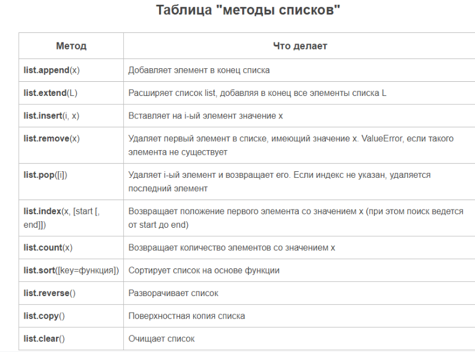
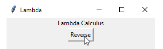
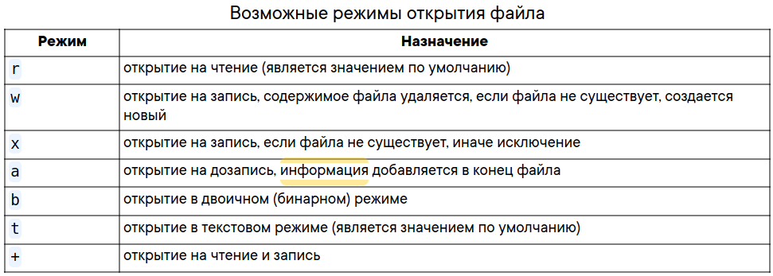
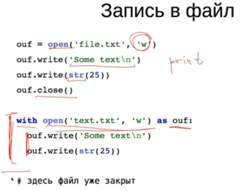
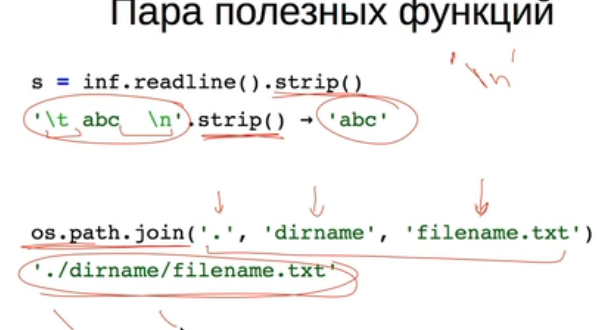

Введение в Python
Ссылки на учебники: Самоучитель PythonПрограммирование на Python (07.10.2024 - 20.10.2024)
Python: основы и применение (20.10.2024 - )
Языки программирования делятся на два типа:
- Компилируемые
Специальная программа, компилятор, преобразует исходный код в машинный.
Полученный в результате файл готов к исполнению без дополнительных инструментов.
Примеры: C++, Colang, Rust - Интерпретируемые
Код исполняется строчка за строчкой специальной программой - интерпретатором.
Исполнение возможно только при наличии этой программы.
Примеры: Python, Lua, JavaScript.
Установка Python на linux системы (Ubuntu, Debian и другие)
Откройте консоль (обычно ctrl+alt+t). Введите в консоли:python3Скорее всего, вас любезно поприветствует python:
dmitriy@945G-M3:~$ python3 Python 3.8.10 (default, Sep 11 2024, 16:02:53) [GCC 9.4.0] on linux Type "help", "copyright", "credits" or "license" for more information. >>>или узнать версию python:
dmitriy@945G-M3:~$ python3 --version Python 3.8.10Если это так, то можно вас поздравить: у вас уже стоит python. В противном случае нужно установить пакет *python3*:
sudo apt install python3Чтобы загрузить установщики для операционных систем Windows и Mac OS, достаточно перейти по ссылке https://www.python.org/downloads/release/python-351/ и в самом низу страницы выбрать нужный для вашей архитектуры установщик интерпретатора: для windows 64bit - "Windows x86-64 executable installer", для windows 32bit - "Windows x86 executable installer", для Mac OS 64 bit - "Mac OS X 64-bit/32-bit installer", для Mac OS 32bit/PPC - "Mac OS X 32-bit i386/PPC installer".
На чем писать код и как выпонять?
- VS code и Pycharm
для моего компьютера очень тяжелые. - В python для linux нет предустановленной среды IDLE. Если хотите, её можно установить отдельно. Пакет называется idle3 (в более ранних версиях он может называться python3-idle).
Однако, её установка не является обязательной. Вы можете писать в своём любимом текстовом редакторе (gedit, vim, emacs...) и запускать программы через консоль:
python3 path_to_file.pyКак писать на IDLE
- https://repl.it/
Начал на нем. - Jupyter Notebook
Чтобы начать на нем работать, команда:jupyter notebook
- Shebang — это специальное выражение, которое указывается в начале файла исполняемого скрипта. Оно сообщает системе, какой интерпретатор использовать для запуска скрипта.
В случае с Python это может быть один из двух вариантов:
/usr/bin/env python. Более переносимый вариант, который позволяет системе самой найти нужный интерпретатор Python.
/usr/local/bin/python. Требует, чтобы интерпретатор Python был установлен именно в этом месте.
Использование shebang не является обязательным для Python-скриптов. Оно полезно, если скрипт предназначен для запуска из командной строки Unix как самостоятельная программа. Если же скрипт запускается из другого Python-скрипта с помощью функции exec() или подобных, то shebang не требуется.
Написал простой код 1.py:
#!/usr/bin/env python print("aggggggg")Если выполнить скрипт, просто: 1.py
то команда не найдена.
если: source 1.py
то синтаксическая ошибкаПрочитал, что требуется указывать полный путь к скрипту для его выполнения. Выполнил:
/usr/bin/python3 ~/Python/1.py
Выполнился без ошибок. После этого:~/Python/1.py /usr/bin/env: «python»: Нет такого файла или каталогаОчевидно неправильный шебанг.
Исправил:#!/usr/bin/env python3 print("aggggggg")Снова: ~/Python/1.py
Теперь выполнился и без ошибок.Если все же выполнить:
1.py 1.py: команда не найдена
То есть все равно нужно указывать явный путь к файлу.py - Интерактивный режим:
Выполняем команду: python3 и далее можно выполнять команды сразу после каждой строки.
Выход из интерактивного режима: нажатие Ctrl+zЧтобы выполнить скрипт в интерактивном режиме, команда:
python3 -i ~/Python//mypython/1.py
Синтаксис
Синтаксис языка Python очень прост.- Конец строки является концом инструкции (точка с запятой не требуется).
- Вложенные инструкции объединяются в блоки по величине отступов. Отступ может быть любым, главное, чтобы в пределах одного вложенного блока отступ был одинаков. Однако хорошим тоном считается отступ каждого блока в 4 пробела
- Вложенные инструкции в Python записываются в соответствии с одним и тем же шаблоном, когда основная инструкция завершается двоеточием, вслед за которым располагается вложенный блок кода, как правило, с отступом под строкой основной инструкции.
Основная инструкция:
Вложенный блок инструкций
Имена
Имя может начинаться с латинской буквы (любого регистра) или подчеркивания, а дальше допустимо использование цифр. В качестве идентификаторов нельзя применять ключевые слова языка и нежелательно переопределять встроенные имена.Имена, начинающиеся с подчеркивания или двух подчеркиваний, имеют особый смысл. Одиночное подчеркивание говорит программисту о том, что имя имеет местное применение, и не должно использоваться за пределами модуля. Двойным подчеркиванием в начале и в конце обычно наделяются специальные имена атрибутов - об этом будет говориться в лекции по объектно- ориентированному программированию.
В каждой точке программы интерпретатор "видит" три пространства имен: локальное, глобальное и встроенное. Пространство имен - отображение из имен в объекты.
Для понимания того, как Python находит значение некоторой переменной, необходимо ввести понятие блока кода. В Python блоком кода является то, что исполняется как единое целое, например, тело определения функции, класса или модуля.
Локальные имена - имена, которым присвоено значение в данном блоке кода. Глобальные имена - имена, определяемые на уровне блока кода определения модуля или те, которые явно заданы в операторе global. Встроенные имена - имена из специального словаря __ builtins __.
Области видимости имен могут быть вложенными друг в друга, например, внутри вызванной функции видны имена, определенные в вызывающем коде. Переменные, которые используются в блоке кода, но связаны со значением вне кода, называются свободными переменными.
Так как переменную можно связать с объектом в любом месте блока, важно, чтобы это произошло до ее использования, иначе будет возбуждено исключение NameError. Связывание имен со значениями происходит в операторах присваивания, from, import, в формальных аргументах функций, при определении функции или класса, во втором параметре части except оператора try-except.
С областями видимости и связыванием имен есть много нюансов, которые хорошо описаны в документации. Желательно, чтобы программы не зависели от таких нюансов, а для этого достаточно придерживаться следующих правил:
- Всегда следует связывать переменную со значением (текстуально) до ее использования.
- Необходимо избегать глобальных переменных и передавать все в качестве параметров. Глобальными на уровне модуля должны остаться только имена-константы, имена классов и функций.
- Никогда не следует использовать from модуль import * - это может привести к затенению имен из других модулей, а внутри определения функции просто запрещено.
Убрать связь имени с объектом можно с помощью оператора del. В этом случае, если объект не имеет других ссылок на него, он будет удален.
Стиль программирования
Ссылки: Стиль программированияPEP8: руководство по написанию чистого и читаемого кода на Python
PEP 8 – Style Guide for Python Code
PEP 8 - руководство по написанию кода
Наиболее существенные положения этого стиля перечислены ниже. В случае сомнений хорошим образцом стиля являются модули стандартной библиотеки.
- Рекомендуется использовать отступы в 4 пробела.
- Максимальная длина строки
Ограничьте длину строки не более чем 79 символами. Если строка длиннее, разбейте ее на несколько строк. Длинные строки могут быть трудны для чтения, особенно когда они выходят за границы окна редактора. Разбиение длинных строк на несколько строк с помощью продолжения строки с помощью символа обратной косой черты \является хорошей практикой. - Длинные логические строки лучше разбивать неявно (внутри скобок), но и явные методы вполне уместны. Отступы строк продолжения рекомендуется выравнивать по скобкам или по первому операнду в предыдущей строке. Текстовый редактор Emacs в режиме python-mode и некоторые интегрированные оболочки (IDE) автоматически делают необходимые отступы в Python-программах:
def draw(figure, color="White", border_color="Black", size=5): if color == border_color or \ size == 0: raise "Bad figure" else: _draw(size, size, (color, border_color)) - Пробелы
Используйте один пробел между операторами и операндами. Не используйте пробелы для выделения скобок вокруг аргументов функций. Это правило помогает упростить код и сделать его более читабельным.
Например:# Правильно: x = 2 + 3 y = (1 + 2) * 3 # Неправильно: x=2+3 y = ( 1 + 2 ) * 3
Не рекомендуется ставить пробелы сразу после открывающей скобки или перед закрывающей, перед запятой, точкой с запятой, перед открывающей скобкой при записи вызова функции или индексного выражения.
Также не рекомендуется ставить более одного пробела вокруг знака равенства в присваиваниях. Пробелы вокруг знака равенства не ставятся в случае, когда он применяется для указания значения по умолчанию в определении параметров функции или при задании именованных аргументов.
Также рекомендуется применение одиночных пробелов вокруг низкоприоритетных операций сравнения и оператора присваивания. Пробелы вокруг более приоритетных операций ставятся в равном количестве слева и справа от знака операции.Пробелы вокруг операторов
Используйте пустые строки для разделения логически связанных частей кода. Не используйте несколько операторов на одной строке.Используйте пробелы вокруг операторов (=, +, -, *, /, //, %, и т. д.), но не используйте пробелы вокруг символа индексирования или среза.
# Правильно: x = 2 + 3 y = x * 4 z = list[0] # Неправильно: x=2+3 y = x*4 z = list [0]
- Именование
Используйте понятные и описательные имена переменных, функций и методов. Для имени переменных используйте строчные буквы, а для имен функций и методов — заглавные буквы. Это правило помогает делать ваш код более читаемым и понятным для других программистов.Например:
# Правильно: age = 25 name = "John" def calculate_sum(numbers): return sum(numbers) # Неправильно: a = 25 b = "John" def calc_sum(nums): return sum(nums)Названия функций и методов Используйте глаголы в названиях функций и методов, используйте нижнее подчеркивание для разделения слов. Это правило помогает делать код более понятным и легче читаемым.
# Правильно: def calculate_sum(numbers): return sum(numbers) def get_user_name(user): return user.name # Неправильно: def numbersSum(nums): return sum(nums)Название переменных
Используйте понятные и описательные названия для переменных, избегайте использования одиночных символов в качестве названий переменных, используйте нижнее подчеркивание для разделения слов.# Правильно: total_sum = 0 list_of_numbers = [1, 2, 3, 4] user_name = "John" # Неправильно: t = 0 n = [1, 2, 3, 4] un = "John"
Имена, которых следует избегать
Никогда не используйте символы l (маленькая латинская буква «эль»), O (заглавная латинская буква «о») или I (заглавная латинская буква «ай») как однобуквенные идентификаторы.В некоторых шрифтах эти символы неотличимы от цифры один и нуля. Если очень нужно l, пишите вместо неё заглавную L.
Имена модулей лучше давать строчными буквами, например, shelve, string, либо делать первые буквы слов заглавными, StringIO, UserDict. Имена написанных на C модулей расширения обычно начинаются с подчеркивания " _ ", а соответствующие им высокоуровневые обертки - с прописных букв: _tkinter и Tkinter.
Классы обычно называют, выделяя первые буквы слов прописными, как в Tag или HTTPServer.
Имена глобальных переменных (если таковые используются) лучше начинать с подчеркивания, чтобы они не импортировались из модуля оператором from-import со звездочкой.
Имена констант (имен, которые не должны переопределяться) лучше записывать прописными буквами, например: RED, GREEN, BLUE.
- Комментарии
Комментарии должны быть короткими, лаконичными и описательными, они должны помогать другим программистам понимать ваш код. Не используйте комментарии для описания очевидных вещей, таких как присваивание переменной значения, и избегайте комментариев в конце строки. После коротких комментариев можно не ставить точку, тогда как длинные лучше писать по правилам написания текста.Комментарии к фрагменту кода следует писать с тем же отступом, что и комментируемый код. После " # " должен идти одиночный пробел. Абзацы можно отделять строкой с " # " на том же уровне.
Блочный комментарий можно отделить пустыми строками от окружающего кода.Комментарии, относящиеся к конкретной строке, не следует использовать часто. Символ " # " должен отстоять от комментируемого оператора как минимум на два пробела.
Хороший комментарий не перефразирует программу, а содержит дополнительную информацию о действии программы в терминах предметной области.
Комментарий своего класса, а также описание модудя, функции модуля можно увидеть через атрибут __doc__:
print(My_objekt.__doc__)
- Импорты
Импортируйте модули в алфавитном порядке, разделяйте группы импортов пустой строкой и избегайте использования символа *. Это
правило помогает упростить импорты и улучшить читабельность кода.
# Правильно: import datetime import os from math import sqrt import requests # Неправильно: import requests, os, datetime from math import * import my_module
- Все модули, классы, функции и методы, предназначенные для использования за пределами модуля, должны иметь строки документации, описывающие способ их применения, входные и выходные параметры.
- Документация:
Для строк документации рекомендуется везде использовать утроенные кавычки ( """ ).Строка документации для отдельной программы должна объяснять используемые ею ключи, назначение аргументов и переменных среды и другую подобную информацию.
Однострочная документация пишется в императиве, как команда: "делай это", "возвращай то".
Многострочная документация содержит расширенное описание модуля, функции, класса. Она будет смотреться лучше, если текст будет написан с тем же отступом, что и начало строки документации.
Документация для модуля должна перечислять экспортируемые функции, классы, исключения и другие объекты, по одной строке на объект.
Строка документации для функции или метода должна кратко описывать действия функции, ее входные параметры и возвращаемое значение, побочные эффекты и возможные исключения (если таковые есть). Должны быть обозначены необязательные аргументы и аргументы, не являющиеся частью интерфейса.
Документация для класса должна перечислять общедоступные методы и атрибуты, содержать рекомендации по применению класса в качестве базового для других классов. Если класс является подклассом, необходимо указать, какие методы полностью заменяют, перегружают, а какие используют, но расширяют соответствующие методы надкласса. Необходимо указать и другие изменения по сравнению с надклассом.
- Контроль версий повышает качество процесса создания программного обеспечения. Для этих целей часто используются RCS или
CVS. "Python Style Guide" рекомендует записывать $Revision: 1.31 $ в переменную с именем __version__, а другие данные
заключать в комментарии " # ".
- Срезы:
В срезе двоеточие действует как бинарный оператор и должно иметь равное количество пробелов с обеих сторон (рассматривая его как оператор с наименьшим приоритетом). В расширенном срезе оба двоеточия должны иметь одинаковое количество интервалов. Исключение: если параметр среза опущен, пробел не ставится. Правильно:ham[1:9], ham[1:9:3], ham[:9:3], ham[1::3], ham[1:9:] # без пробела ham[lower:upper], ham[lower:upper:], ham[lower::step] # Плюс в двух ниже примерах можно с пробелом так и без пробела ham[lower+offset : upper+offset] ham[lower + offset : upper + offset] ham[: upper_fn(x) : step_fn(x)], ham[:: step_fn(x)] Неправильно: ham[lower + offset:upper + offset] # видимо двоеточие между выражениями должно быть с пробелом ham[1: 9], ham[1 :9], ham[1:9 :3] # пробела не должно быть в обычных срезах ham[lower : : step] # еще раз, правильно без пробелов ham[ : upper]
Не используйте пробелы вокруг знака =, если он используется для обозначения именованного аргумента или значения параметров по умолчанию.
Правильно:
def complex(real, imag=0.0): return magic(r=real, i=imag) Неправильно: def complex(real, imag = 0.0): return magic(r = real, i = imag)Однако при объединении аннотации аргумента со значением по умолчанию используйте пробелы вокруг знака =.Правильно:
def munge(sep: AnyStr = None): ... def munge(input: AnyStr, sep: AnyStr = None, limit=1000): ... Неправильно: def munge(input: AnyStr=None): ... def munge(input: AnyStr, limit = 1000): ...
Переменные
Для имени переменной используется любой набор допустимых символов: буквы английского алфавита, цифры, знак _. При этом цифру нельзя ставить в начале.В Python переменные являются лишь именованиями объектов. Ссылками на объекты, если так проще.
Присвоив, скажем, переменной b значение 5 (b = 5) - стоит помнить, что переменная b лишь ссылается на целочисленное значение 5.
При желании можно объявить переменную b хоть стоковым значением (b = str(b)) и это будет всё та же "5", но уже не целочисленная. И арифметических действий с ней уже не получится. Просто старое значение (ссылка) переменной будет стёрта и теперь она уже будет ссылаться на 5 - объект типа strint (str).
Точно также и с преобразованием во float - это будет ссылка уже на третий объект, 5.0 типа float.
Все три объекта в ходе этих операций не менялись, они неизменны. Просто переменная ссылалась то на один, то на другой.
По сути, когда вы присваиваете переменной значение - в памяти "создаётся объект". Если дальше значение в этой переменной изменилось, и на старый объект она больше не ссылается - то (при условии, что на старый объект не ссылается какая-нибудь другая переменная) так называемый "Сборщик мусора" (встроенная, автоматическая штука в компиляторе Python, которая облегчает нам всем жизнь) уничтожает этот самый объект (когда на него больше никакая переменная не ссылается, значит - он в памяти больше не нужен).
Так что да, технически - объекты этих типов не изменяемы. Надеюсь, не слишком сумбурно изложил.
Ещё:
В Python есть изменяемые и неизменяемые типы. Изменяемые отличаются тем, что их содержимое можно сменить, не изменив ссылку на них. Неизменяемые объекты приходится пересоздавать, чтобы отразить изменения состояния. При этом все старые ссылки не видят это обновление, потому что указывают на старый объект.
Поясню на практике. Списки, словари, множества - это изменяемые объекты:
l1 = [1, 2, 3] l2 = l1 print(l1, l2, id(l1), id(l2)) # [1, 2, 3] [1, 2, 3] 139917408901064 139917408901064 l1[1] = 10 print(l1, l2, id(l1), id(l2)) # [1, 10, 3] [1, 10, 3] 139917408901064 139917408901064Числа, строки, кортежи - это неизменяемые объекты:
v1 = 1024 v2 = v1 print(v1, v2, id(v1), id(v2)) # 1024 1024 ...7040 ...7040 v1 = 2048 print(v1, v2, id(v1), id(v2)) # 2048 1024 ...5312 ...7040 t1 = (1, 2, 3) t2 = t1 print(t1, t2, id(t1), id(t2)) # (1, 2, 3) (1, 2, 3) ...6232 ...6232 # t1[1] = 10 # не сработает, так как кортежи неизменяемые t1 = (1, 10, 3) print(t1, t2, id(t1), id(t2)) # (1, 10, 3) (1, 2, 3) ...7240 ...6232
Числа:
Типы int и floatВсе объекты в Python принадлежат какому-то классу или, другими словами, у всех данных есть свой определенный тип. Чтобы узнать тип данных, можно воспользоваться следующим кодом:
print(type(5)) print(type(5.8))В первом случае будет выведен результат <class 'int'>, а во втором - <class 'float'>. Целые числа принадлежат классу int, дробные - классу float.
Тип можно менять: Функция int(x) - преобразует число x типа float (вещественное) в число типа int (целое)
>>> x=2.7666 >>> print(int(x)) 2float(x) наоборот выводит число int типа в типе float
>>> x=7 >>> type(x) <class 'int'> >>> print(float(x)) 7.0 >>> type(x) <class 'int'> >>> print(x) 7Нужно иметь в виду, что объекты: числа строки являются неизменяемыми, потому x=7 в примере выше не изменилось, только вывод функции в другом формате.
- Операции с числами
Над объектами из классов int и float можно производить стандартные арифметические операции:print(5+7) print(10-4) print(64/8) print(9*8+25/5)
В Python есть 3 типа делений:print(17/2) #обычное деление - результат - число с плавающей точкой (вещественное) 8.5 print(17//2) #целочисленное деление, результат - целая часть при делении print(17%2) #деление с остатком - результат 1, остаток при делении
Обратите внимание на текст после знака #. Так в Python обозначаются комментарии. Эта часть кода не обрабатывается интерпретатором, она нужна для вас и других разработчиков, которые будут работать с кодом.Многострочные комментарии делаются с помощью тройных кавычек:
'''Различные варианты деления в Python обычное деление целочисленное деление деление с остатком'''
- Возведение в степень:
print(3**6) print(10**(-1)) print(25**(1/2))
Результат выполнения этой программы:729 0.1 5.0
- Приоритет арифметических операций
Это хоть и кажется иногда очевидным, или несущественным, но на самом деле крайне важно.
Сначала идут выражения в скобках
Затем операция возведения в степень
Затем умножение и деление (обычное, целочисленное)
Сложение и вычитание
При равном приоритете операции выполняются слева направо
Любые арифметические операции выше по приоритету операций сравнения и логических операторов. - Приоритет логических операций
Операция and имеет более высокий приоритет чем or:>>> print(7>5 or 6<10 and 10>11) True
Здесь сначала будет выполняться правый логический оператор (and), а потом только левый (or). - Вещественные числа можно записывать в таком формате: 5e-1 - это число 0,5. Здесь e - это экспонента, равная 10. -1 - это степень.
1234e-2 - это 12,34
>>> 23e3 23000.0
- Операторы приращения
Сумму x = x + 3 можно записать по-другому: x += 3
Другие операторы приращения: x -=i это x = x - i
x *=i это x = x*i
x /=i это x = x / i
x //=i это x = x // i
x %=i это x = x % i
x **=i будет означать команду x = x ** i
Строки
- Строки относятся к классу str
- Строчные переменные можно задать 3 способами:
- s1="stroka"
- s2='stroka'
- s3="""stroka""""
>>> string = '"sp"am"' >>> print(string) "sp"am" >>> string = "'sp'am'" >>> print(string) 'sp'am'
Тройные кавычки позволяют создавать многостроковые комментарии:""" stroka1 stroka2 stroka3 """ - Строки имеют индесацию
- Если хотим вызвать все символы по отдельности с строки, то можно использовать цикл:
s = 'stroka' for i in s: print(i) - Экранированные последовательности
Экранированные последовательности позволяют вставить символы, которые сложно, или невозможно ввести с клавиатуры.- \n - перевод строки
- \f - перевод страницы
- \t - горизонтальная табуляция
- \v - вертикальная табуляция
- "Сырые" строки - подавляют экранирование
Если перед открывающей кавычкой стоит символ 'r' (в любом регистре), то механизм экранирования отключается.S = r'C:\newt.txt'
"Сырая" строка не может заканчиваться символом обратного слэша. Его придётся добавлять (или убирать) вручную. Также неочевидно работает экранирование кавычек. Оно происходит, но символ обратного слэша также добавляется в строку. А не экранировать кавычку того же типа, что и в литерале, нельзя. - Операции над строками
Строка в Python ведёт себя как массив символов, а значит, можно применять индексы и срезы:>>> string = "Привет, pyplanet" >>> string[0] 'П' >>> string[-1] 't' >>> string[8:] 'pyplanet' >>> string[::-1] 'tenalpyp ,тевирП' >>> string[::2] 'Пие,ppae'
- Строки можно складывать. При сложении они склеиваются.
str1 = 'Hello, ' str2 = 'world!' print(str1+str2)
Результат: “Hello, world!” - Строку можно умножить на число:
print(str1*5)
Результат - это повторение строки str1 5 раз. - Часто нам будет полезно уметь определять длину строки. Для этого существует функция len( ):
print(len('строка')) - Обратите внимание, что когда мы считываем данные с помощью функции input( ), мы считываем именно строковый тип. Если мы в
дальнейшем хотим работать с введенными данными как с числами, то можно воспользоваться приведением типов:
a = int(input()) b = float(input())
- Строки являются неизменяемыми:
>>> s='asdf' >>> s[0]='a' Traceback (most recent call last): File "
объект 'str' не поддерживает назначение элемента", line 1, in TypeError: 'str' object does not support item assignment
Методы объекта строка
Полный список строковых методов есть в нашем справочнике.
- replace()
Метод replace() в Python используется для замены всех вхождений указанной подстроки в строке, на другую подстроку. Возвращает другую измененную строку.Синтаксис
str.replace(old, new[, count])где:
str — строка, в которой нужно выполнить замену;
old — подстрока, которую нужно заменить;
new — новая подстрока, которой нужно заменить все вхождения old;
count — необязательный параметр, который указывает, сколько раз нужно выполнить замену. По умолчанию заменятся все вхождения old.Примеры использования метода replace()
Допустим, у вас есть строка, в которой нужно заменить все вхождения одного символа на другой. В этом примере мы заменяем все запятые в строке на точки с помощью метода replace():s = '3,14' new_s = s.replace(',', '.') print(new_s) # '3.14' - count(arg)
считает сколько раз в строке встречается символ(ы) args = input() n = s.count('g') + s.count('G') + s.count('c') + s.count('C') print(n * 100 / len(s)) - upper()
переводит строку в верхний регистр - lower()
наоборот в нижний регистр - find(arg)
выдает индекс arg в строке. Если arg не будет в строке, то результат будет -1
более рекомендуется конструкция: if 'arg' in s:
Нужно иметь в виду, что метод создает новый объект, как результат выполнения метода, но оригинальный объект не меняется.Синтаксис:
S.find(sub[, start[, end]]) -> int
Возвращает наименьший индекс в S, где находится подстрока sub, так что sub содержится в S[start:end]. Необязательные аргументы start и end интерпретируются как в нотации slice.
Возвращает значение -1 в случае сбоя. - strip()
Функция strip() – это предопределенная библиотечная функция Python. Она используется для возврата копии исходной строки путем удаления начальных и конечных пробелов, символов, переданных в функцию strip().
Другими словами, это функция строки, которая удаляет символы как с левого, так и с правого конца строки, указывая набор символов для функции strip() в качестве аргумента. По умолчанию она удаляет пробелы из начальной и конечной строки, если в функцию strip() в Python не передается аргумент.Синтаксис
объект строки.strip('parametr')Параметр strip() является необязательным. Если программист не передает какой-либо параметр функции strip(), она удаляет начальные и конечные пробелы из строк.
Если набор заданного параметра передается в функцию strip(), она удаляет символы из исходной строки.
Возвращаемое значение: возвращает другой объект строки, равной исходной минус удаленный набор символов (параметр) или пробелов в конце и начале исходной строки.>>> a = ' abcd e ' >>> b = a.strip() >>> b 'abcd e' >>> b = b.strip('e') >>> b 'abcd '
Общий шаблон:
s = 'stroka' print(s[x1:x2:x3]Здесь напечатается строка из символов, где x1 - это индекс первого нужного символа в строке. Если не указан, то по умолчанию равен 0 Может иметь отрицательное значение, тогда индекс считается с првой стороны, но все равно далее символы смотрятся в правую сторону.
x2 - индекс последнего нужного символа. Может иметь отрицательное значение, то есть отсчет с правой стороны.
x3 - шаг приращения индекса, если не указан, то по умолчанию 1. Может иметь отрицательное значение. s[::-1] просто перевернёт строку.
Логический тип данных
В Python существует логический тип данных - класс bool. Переменные этого типа могут принимать только 2 значения: True и False.
Тип данных None
В Python существует зарезервированное слово None, которое обозначает отсутствие типа.a = None print(type(a))
Параметры функции print
5 способов форматирования строк:- Конкатенация. Грубый способ форматирования, в котором мы просто склеиваем несколько строк с помощью операции сложения:
>>> name = "Дмитрий" >>> age = 25 >>> print("Меня зовут " + name + ". Мне " + str(age) + " лет.") >>> Меня зовут Дмитрий. Мне 25 лет. - %-форматирование. Самый популярный способ, который перешел в Python из языка С. Передавать значения в строку можно через
списки и кортежи , а также и с помощью словаря. Во втором случае значения помещаются не по позиции, а в соответствии с именами.
>>> name = "Дмитрий" >>> age = 25 >>> print("Меня зовут %s. Мне %d лет." % (name, age)) >>> Меня зовут Дмитрий. Мне 25 лет. >>> print("Меня зовут %(name)s. Мне %(age)d лет." % {"name": name, "age": age}) >>> Меня зовут Дмитрий. Мне 25 лет. - Template-строки. Этот способ появился в Python 2.4, как замена %-форматированию (PEP 292), но популярным так и не стал.
Поддерживает передачу значений по имени и использует $-синтаксис как в PHP.
>>> from string import Template >>> name = "Дмитрий" >>> age = 25 >>> s = Template('Меня зовут $name. Мне $age лет.') >>> print(s.substitute(name=name, age=age)) >>> Меня зовут Дмитрий. Мне 25 лет. - Форматирование с помощью метода format(). Этот способ появился в Python 3 в качестве замены %-форматированию. Он также
поддерживает передачу значений по позиции и по имени.
>>> name = "Дмитрий" >>> age = 25 >>> print("Меня зовут {}. Мне {} лет.".format(name, age) >>> Меня зовут Дмитрий. Мне 25 лет. >>> print("Меня зовут {name} Мне {age} лет.".format(age=age, name=name) >>> Меня зовут Дмитрий. Мне 25 лет. - f-строки. Форматирование, которое появилось в Python 3.6 (PEP 498). Этот способ похож на форматирование с помощью метода
format(), но гибче, читабельней и быстрей.
>>> name = "Дмитрий" >>> age = 25 >>> print(f"Меня зовут {name} Мне {age} лет.") >>> Меня зовут Дмитрий. Мне 25 лет.f-строки делают очень простую вещь — они берут значения переменных, которые есть в текущей области видимости, и подставляют их в строку. В самой строке вам лишь нужно указать имя этой переменной в фигурных скобках.С помощью f-строк можно форматировать дату без вызова метода strftime():
>>> from datetime import datetime as dt >>> now = dt.now() >>> print(f"Текущее время {now:%d.%m.%Y %H:%M}") >>> Текущее время 24.02.2017 15:51
Без параметров print() будет выводить в цикле результат на новой строке.
print('stroka', end='')
Здесь результаты будут выводиться на одной строке через пробел.
Функция print(arg1, arg2, ..., argN) выводит аргументы через пробел. Если указать флаг sep="\n", то каждый аргумент выведется на новой строке, пример print(arg1, arg2 , sep="\n")
print(*list[])
это "распаковка" списка (да и не только). позволяет вывести не список (с [] и запятыми между элементами), а только элементы.
input()
-
a, b = (int(i) for i in input().split())
В этой команде вводим число из нескольких цифр, функция split расщепляет это число на отдельные цифры и они присваиваются переменным a и b
Проверил, у меня если одно число ввести, то вызывает ошибку, что дескать нужно ввести два числа. Ввел 2 числа через пробел, теперь все верно, переменным присвоились эти значения. - Команда input() выдает объект типа строка, даже если напечатаем число. Поэтому с числа надо input приводить к типу int или float.
Список
Список - переменная, содержащая список данных (элементов), внутри квадратных скобок идущих через запятую. Элементы строки можно в отличии от строки изменять.list = [] # пустой список array = [1, 2, 3, 4, 5, 6, 7] # список из целых чисел int print(type(array)) # класс list ar = [2, 4.6, 'str', [1, 2, 3]] # список, состоящий из целого числа, # из числа с плавающей точкой, из строки и из списка
Индексация списков:
Индексация элементов списка имеет 2 способа, традиционная с 0 и с конца списка с -1. Например есть список a = [1, 2, 3, 4]Тогда по обычной индексации элемент 1 имеет индекс 0 (a[0] = 1, a[1] = 2, a[2] = 3, a[3] = 4)
По индексации с конца последний элемент имеет индекс -1 и далее левее на -1 индекс растет: a[-1] = 4, a[-2] = 3, a[-3] = 2, a[-4] = 1
Индекс, в общем случае, не обязан быть числом. К элементам хеш-таблиц (которые мы рассмотрим позже) можно обращаться по строковому индексу.
Также, поскольку списки - изменяемый тип данных, то по индексу возможно присвоение:
>>> array = [1, 2, 3, 0, 1.4, -2] >>> array[1] = 42 >>> array [1, 42, 3, 0, 1.4, -2]
Методы списка

- append()
array.append(8)
В список array добавили элемент 8 с помощью метода append.Другой способ добавления в конец списка нового элемента - оператор приращения:
array +=[8]
Интересный пример по этому случаю:>>> students = ['Ivan', 'Masha', 'Sasha'] >>> students += ['Olga'] >>> students ['Ivan', 'Masha', 'Sasha', 'Olga'] >>> students += 'Olga' >>> students ['Ivan', 'Masha', 'Sasha', 'Olga', 'O', 'l', 'g', 'a']
Видна разница между добавлением элемента с помощью модуля append и оператором +=.
И списки, и строки - это последовательности (см. https://docs.python.org/3/library/stdtypes.html?highlight=mutable%20sequence#) .
+= складывает список с элементами последовательности по отдельности.
А append прибавляет к списку новый элемент списка, сколько бы вложенных элементов в этом элементе ни было .
Продолжение:>>> students += ['Dmitriy', 'Alexei'] >>> students ['Ivan', 'Masha', 'Sasha', 'Olga', 'O', 'l', 'g', 'a', 'Dmitriy', 'Alexei'] >>> students.append(['Anna', 'Elena']) >>> students ['Ivan', 'Masha', 'Sasha', 'Olga', 'O', 'l', 'g', 'a', 'Dmitriy', 'Alexei', ['Anna', 'Elena']]
- Способы удаления элементов из списка:
- remove() - удаление одного элемента из списка по имени
Параметров может быть только один, то есть можно удалить за раз только один элемент:['Ivan', 'Masha', 'Sasha', 'Olga', 'O', 'l', 'g', 'a', 'Dmitriy', 'Alexei', ['Anna', 'Elena']] >>> students.remove('o', 'l', 'g', 'a', ['Anna', 'Elena']) Traceback (most recent call last): File "", line 1, in TypeError: remove() takes exactly one argument (5 given) >>> students.remove(['Anna', 'Elena']) >>> students ['Ivan', 'Masha', 'Sasha', 'Olga', 'O', 'l', 'g', 'a', 'Dmitriy', 'Alexei'] - Метод pop(): удаление по индексу
pop() подойдёт, когда известно точное местоположение удаляемого элемента. В качестве аргумента pop() получает индекс, а возвращает удалённое значение:>>> lst = [1, 2, 3, 5] >>> lst.pop(3) 5 >>> print(lst) [1, 2, 3]
Если передать отрицательное значение, то pop() будет считать индексы не с нуля, а с -1Если оставить pop() без аргумента, то удалится последний элемент — потому что -1 является аргументом по умолчанию.
При попытке обратиться в методе pop() к несуществующему индексу, интерпретатор выбросит исключение IndexError.
- Метод clear(): очищение списка
clear() удаляет из списка всё, то есть буквально очищает его. Он не принимает аргументов и не возвращает никаких значений:
print(lst) [1, 2, 3] >>> lst.clear() >>> print(lst) []
- Ключевое слово del: удаление срезов
del, как и метод pop(), удаляет элементы списка по индексу. При этом с его помощью можно избавиться как от единичного объекта, так и от целого среза:new_list = ['ноль', 1, [2.1, 'два и два'], 3, 'IV'] del new_list[2] print(new_list) >>> ['ноль', 1, 3, 'IV']
Если передать срез, то элемент с правым индексом не удалится. В примере ниже это строка 'IV':new_list = ['ноль', 1, [2.1, 'два и два'], 3, 'IV'] del new_list[1:4] print(new_list) >>> ['ноль', 'IV']
Чтобы очистить список, достаточно передать полный срез [:]:new_list = ['ноль', 1, [2.1, 'два и два'], 3, 'IV'] del new_list[:] print(new_list) >>> []
Также del можно использовать с отрицательными индексами:new_list = ['ноль', 1, [2.1, 'два и два'], 3, 'IV'] del new_list[-4] print(new_list) >>> ['ноль', [2.1, 'два и два'], 3, 'IV']
Со срезами это тоже работает:new_list = ['ноль', 1, [2.1, 'два и два'], 3, 'IV'] del new_list[-3:-1] print(new_list) >>> ['ноль', 1, 'IV']
Если при удалении единичного элемента указать несуществующий индекс, то Python выдаст ошибку IndexError.
- remove() - удаление одного элемента из списка по имени
- sort() - сортировка элементов по возрастанию
>>> students.sort() >>> students ['Alexei', 'Dmitriy', 'Ivan', 'Masha', 'Olga', 'Sasha', 'a', 'g', 'l']
Здесь строки отсортировались по алфавитному порядку, буквы также по алфавиту, но после строк.Второй способ, использовать функцию sorted():
>>> number = [1, 1000, 6, 9, 4, 0] >>> sorted(number) [0, 1, 4, 6, 9, 1000] >>> number [1, 1000, 6, 9, 4, 0]
В отличии от метода sort() функция sorted() не меняет порядок спискаx = ['abc', 'a', 'ab', 'abcd']
Сортировка элементов списка по возрастанию:# 1 x.sort(key=len) # по длине print(x) ['a', 'ab', 'abc', 'abcd'] # 2 new_x = sorted(x, key=len) print(new_x) ['a', 'ab', 'abc', 'abcd'] В обратном порядке: # 1 x.sort(key=len, reverse=True) print(x) ['abcd', 'abc', 'ab', 'a'] # 2 new_x = sorted(x, key=len, reverse=True) print(new_x) ['abcd', 'abc', 'ab', 'a']
Разница между sort() и sorted() в том, что первый - сортирует список на месте, возвращая None (нет нового списка, а пероначальный меняется). Второй - возвращает новый отсортированный список.Так же, можно сортировать словари.
x = {1: 'a', 3: 'ab', 2: 'abc'} По ключам: x = dict(sorted(x.items())) print(x) {1: 'a', 2: 'abc', 3: 'ab'} По значениям: x = dict(sorted(x.items(), key=lambda e:e[1])) print(x) {1: 'a', 3: 'ab', 2: 'abc'} - insert(par1, par2)
Вставка элемента par2 по индексу par1>>> list = [0, 2, 3, 4] >>> list.insert(1, 1) >>> list [0, 1, 2, 3, 4]
- Метод reverse()
Этот метод перевернет список в обратном порядке.Функция reversed() делает тоже самое.
Функции
Чем вообще функции отличаются от методов?
- Функция reversed()
В Python 3 встроена специальная функция reversed(), в качестве аргумента она принимает список или строку, а возвращает итератор последовательности значений, состоящей из всех элементов аргумента в обратном порядке. - Функция sum()
Для суммирования элементов списка.
Она принимает два аргумента:iterable — итерируемый объект (например, список), элементы которого нужно суммировать.
start (необязательный) — начальное значение суммы. По умолчанию равно 0.
Пример использования:
numbers = [1, 2, 3, 4, 5] total = sum(numbers) print(total)
В этом примере sum(numbers) возвращает сумму всех элементов списка numbers. - Функции max() и min()
Эти функции возвращают максимальное и минимальное значение из списка. -
Можно определить длину списка new_array:
len(new_array)Найти сумму элементов списка:sum(new_array) - Списки можно складывать (склеивать):
array2 = [9, 10] new_array = array + array2 new_array = [0, 2, 3, 4, 5, 6, 7, 8, 9, 10] - Списки можно умножать:
>>> list=['f',4,5,'r'] >>> list ['f', 4, 5, 'r'] >>> list*5 ['f', 4, 5, 'r', 'f', 4, 5, 'r', 'f', 4, 5, 'r', 'f', 4, 5, 'r', 'f', 4, 5, 'r'] >>>
- Как узнать входит ли 'stroka' в список list
if 'stroka' in list: # true, входит else: # false, не входитМожно для этой цели использовать модуль index(var):>>> students.index('Sasha') 2Здесь если строка Sasha входит в список, то вернется индекс этого элемента, иначе вернет ошибку. - Присвоение списков
В питоне:>>> a = [1, 2, 3, 4] >>> b = a >>> b [1, 2, 3, 4] >>> a[3] = 10 >>> a [1, 2, 3, 10] >>> b [1, 2, 3, 10]
Видно, что если изменили значение элемента в списке a, то изменится и список b, хотя обычно в других языках так не должно быть.
Когда вы пишите a = [1, 2, 3], то а лишь указывает на список [1, 2, 3], это как ярлык, который вы прикрепили к данному списку. Затем, делая b=a, вы не копируете список, вы просто создаете новый ярлык к списку, на который указывает а. Изменяя a, вы меняете также b. Потому что они указывают на один и тот же список.
Чтобы a и b открепить друг от друга, нужно одному из них присвоить новый список (или любой объект другого типа).
Генератор коллекций
не стоит путать «генераторы коллекций» (comprehensions, они же «включения») и «генераторы-итераторы». Первые — мощный синтаксический сахар для генерации коллекций «на лету», вторые — способ получения значений по запросу.Генерация списков:
Список можно создавать с помощью так называемых генераторных выражений, шаблон:(выражение for j in итерируемый объект if условие)Где for, in, if — ключевые слова, j — переменная.
Пример:
a = (i**2 for i in range(1,5))
num = [int(i) for i in input().split()]Если на вход подавать числа, то на выходе будет список из чисел.
Если же для получения списка использовать попроще конструкцию:
num = input().split()то здесь даже если подавать на вход числа, на выходе будет список из односимвольных строк.
>>> numbers = [int(i) for i in input().split()] 1 3 5 6 10 >>> numbers [1, 3, 5, 6, 10] >>> num = input().split() 1 3 5 6 10 >>> num ['1', '3', '5', '6', '10']
Генерация словарей:
Общий шаблон генераторов словарей в Python:
dict_variable = {key:value for (key,value) in dictonary.items()}
Это самый простой вариант генератора. При добавлении условий код усложнится.
Генератор словарей — мощная концепция, которую можно использовать для замены циклов и лямбда-функций. При этом не все циклы for могут быть записаны как генератор словаря, но любой генератор можно переписать с использованием цикла for.
Рассмотрим следующую задачу. Вы хотите создать новый словарь, где ключами будут четные числа в диапазоне от 0 до 10, а значениями — квадраты этих чисел.
Давайте посмотрим, как можно решить эту проблему, используя цикл for и генератор словарей:
numbers = range(10)
new_dict_for = {}
# Добавляем значения в `new_dict` с помощью цикла for
for n in numbers:
if n%2==0:
new_dict_for[n] = n**2
print(new_dict_for)
# {0: 0, 8: 64, 2: 4, 4: 16, 6: 36}
# Используем генератор словаря
new_dict_comp = {n:n**2 for n in numbers if n%2 == 0}
print(new_dict_comp)
# {0: 0, 8: 64, 2: 4, 4: 16, 6: 36}
Инверсия словаря
d = {'A': 1, 'B': 2, 'C': 3}
inverse_dict = {v: k for k, v in d.items()}
print(inverse_dict) # {1: 'A', 2: 'B', 3: 'C'}
Прямоугольная матрица
Иногда нам приходится использовать таблицы с данными для решения своих задач. Такие таблицы называются матрицами или двумерными массивами.В Python подобные таблицы можно представить в виде списка, элементы которого являются другими списками.
Создать такой массив в Python можно разными способами. Первый способ:
# Создание таблицы с размером 3x3, заполненной нулями
a = 3
mas = [0] * a
for i in range(a):
mas[i] = [0] * a
print(mas) # Выведет [[0, 0, 0], [0, 0, 0], [0, 0, 0]]
Второй способ предполагает создание пустого списка с добавлением в него новых списков. Рассмотрим на примере:
# Создание таблицы с размером 2x2, заполненной единицами
a = 3
mas = []
for i in range(a):
mas.append([1] * a)
print(mas) # Выведет [[1, 1, 1], [1, 1, 1], [1, 1, 1]]
Третьим и самым простым способом является генератор списков с x строками, которые будут состоять из y элементов. Пример:
# Создание таблицы с размером 3x3, заполненной двойками a = 3 mas = [[2] * a for i in range(a)] print(mas) # Выведет [[2, 2, 2], [2, 2, 2], [2, 2, 2]]4 способ:
a = [[0 for j in range(m)] for i in range(n)]Здесь получаем матрицу из n строк и m столбцов, заполненную нулями.
Для обработки и вывода двухмерных списков используются два вложенных цикла. Первый цикл – по порядковому номеру строки, второй – по ее элементам. Например, вывести массив можно так:
mas = [[1, 1, 1], [1, 1, 1], [1, 1, 1]]
for i in range(0, len(mas)):
for i2 in range(0, len(mas[i])):
print(mas[i][i2], end=' ')
print()
# Выведет
1 1 1
1 1 1
1 1 1
То же самое можно сделать не по индексам, а по значениям массива:
mas = [[1, 1, 1], [1, 1, 1], [1, 1, 1]]
for i in mas:
for i2 in i:
print(i2, end=' ')
print()
# Выведет
1 1 1
1 1 1
1 1 1
Множества (set и frozenset)
Множество - объект, который содержит неповторяющие элементы. Оформляется с помощью фигурных скобок.some_set = {1, 2, 3...}
Но если попробуем так:
test = {}
то создадим не множество, а словарь.
Пустое множество создается с помощью функции set():
some_set = set()
for _ in range(int(input())):
wrd |= {i.lower() for i in input().split()}
Здесь wrd |= {...} отвечает за добавление множества {...} в единое wrd (аналог метода update)
из stackoverflow:
| - объединяет
|= -обновляет
>>> d1 = {"a": 0, "b": 1, "c": 2}
>>> d2 = {"c": 20, "d": 30}
>>> # Merge, |
>>> d1 | d2
{"a": 0, "b": 1, "c": 20, "d": 30}
>>> d1
{"a": 0, "b": 1, "c": 2}
>>> # Update, |=
>>> d1 |= d2
>>> d1
{"a": 0, "b": 1, "c": 20, "d": 30}
Особенности set
Может содержать только неизменяемые элементы (числа, строки, кортежи - может; списки, другие множества - не может)Порядок элементов не определён
Индексация элементов отсутствует
Особенности связаны с тем, что внутри множества в Python реализованы хеш-таблицей. Если кратко, то от каждого элемента мы вычисляем хеш-функцию, и её значение - это индекс в каком-то большом заранее выделенном массиве.
Отсюда также следует, что для поиска элемента в большом массиве выгоднее (по скорости) использовать множества, а не списки.
Перебрать элементы множества можно обычным способом с помощью цикла:
for element in some_set:
Методы множества:
Метод add
Метод add добавляет элементы в множество. Если элемент уже есть в множестве, то он не дублируется и множество остается в
исходном состоянии. Элемент добавляется в произвольном порядке, его позиция для множества четко не определяется. В параметре
метода передаем элемент, который хотим добавить.
Синтаксис
множество.add(что добавляем)
Пример
Давайте добавим к нашему множеству новый элемент:
st = {'a', 'b', 'c'}
st.add('e')
print(st)
Результат выполнения кода:
{'e', 'b', 'c', 'a'}
Пример
А теперь давайте добавим уже существующий элемент:
st = {'a', 'b', 'c'}
st.add('b')
print(st)
После выполнения кода нам вернется наше множество:
{'b', 'a', 'c'}
Frozenset
frozenset - это неизменяемое множество. Создано по аналогии с парой список - кортеж, имеет те же самые особенности по сравнению с множеством, что и кортежи по сравнению со списками. Создаётся только с помощью функции frozenset(), своего литерала (как кортеж) не имеет.frozenset может использоваться в качестве элементов set.
Методы множества
- name_set.add(element)
Добавляем element в name_set. Если element уже есть, то не добавится. - name_set.remove(element)
Удаляет element из множества. Если этого элемента нет в множестве, то возникнет ошибка. - name_set.discard(element)
Аналогично методу remove, только при удалении несуществующего элемента, ошибки не возникнет. - name_set.clear(element)
Удалит все элементы множества.
Кортежи
Кортежи - почти как изученные нами ранее списки, за исключением того, что они неизменяемы.
Как создаётся кортеж?
Кортеж создаётся способом, походим на то, каким создаются списки, только вместо квадратных скобок - круглые.
a = (1, 2, 3, 0, -1, 2)Скобок может вообще не быть:
a = 1, 2, 3, 0, -1, 2Пустой кортеж:
a = ()А вот кортеж из одного элемента выглядит иначе:
a = (1, )Здесь обязательна запятая, иначе Python не сможет отличить одноэлементный кортеж от просто числа.
Зачем нужен кортеж, если есть списки?
- Кортежи занимают немного меньше памяти и работают чуть быстрее до тех пор, пока вы не собираетесь изменять его содержимое
- Кортежи лучше защищены от ненамеренного изменения данных
- Кортежи могут быть использованы в местах, требующих неизменяемый тип данных
- Некоторые функции работают только с кортежами
Словарь
Словарь (хэш, ассоциативный массив) - это изменчивая структура данных для хранения пар key-value, где value однозначно определяется ключом.В качестве ключа может выступать неизменчивый тип данных (число, строка, кортеж и т.п.).
Порядок пар ключ-значение произволен (словарь не имеет индекса, вместо индекса ключ).
value может быть строкой, числом, списком.
Задается с помощью фигурных скобок (как множество):
var_dictionary={
key1:value1,
key2:value2,
key3:value3
}
Пример:
dictionary = {'dog' : 'собака', 'table' : 'стол', 'computer': 'компьютер'}
Мы можем обращаться к значениям словаря по ключу.
print(dictionary['dog']) # печатаем строку 'собака' dictionary['dog'] = 'пес' # изменяем значение 'собака' на 'пес' dictionary['laptop'] = 'ноутбук' # добавляем новый элемент с ключом 'laptop' и значением 'ноутбук' в словарь del dictionary[dog] # удаляется пара ключ-значение с данным ключомКак добавить элемент в словарь
В отличие от списков и кортежей, в работе со словарями методы add(), insert() и append() вам не помощники. Тут необходимо создать новый ключ. Позже он будет использоваться для хранения значения.
Добавляются элементы в словарь так:
dictionary_name[key] = valueРассмотрим пример, чтобы разобраться. В нашем словаре было четыре пары ключ-значение. Этот словарь отражает количество булочек, которые продаются в кафе.
Допустим, мы испекли 10 вишневых булочек. Теперь нам нужно внести их в словарь. Сделать это можно так:
scones = {
"Фрукты": 22,
"Пустая": 14,
"Корица": 4,
"Сыр": 21
}
scones["Вишня"] = 10
print(scones)
Вывод:
{'Фрукты': 22, 'Овощи': 14, 'Корица': 4, 'Сыр': 21, 'Вишня': 10}
Как видите, мы добавили в словарь ключ Вишня и присвоили ему значение 10.
Сперва мы объявили словарь scones, хранящий информацию о булочках, которые доступны к заказу в нашем кафе. Потом мы добавили в
наш словарь ключ Вишня и присвоили ему значение 10:
scones["Вишня"] = 10
И, наконец, мы вывели в консоль обновленную версию словаря.
добавление и обновление происходит одинаково Тем же способом мы можем обновить значение ключа. Допустим, мы испекли еще 10 булочек с корицей. Обновить значение этого ключа можно так:
scones = {
"Фрукты": 22,
"Пустая": 14,
"Корица": 4,
"Сыр": 21
}
scones["Корица"] = 14
print(scones)
Вывод:
{'Фрукты': 22, 'Пустая': 14, 'Корица': 14, 'Сыр': 21}
То есть, тем же способом мы можем установить новое значение какому-либо ключу. В нашем случае мы присвоили Корица значение 14.
Как добавлять элемент в словарь в цикле:
# input data for dict
keys = ['Name', 'Website', 'Topic', 'Founded']
values = ['GeeksforGeeks', 'https://www.geeksforgeeks.org/', 'Programming', 2009]
# creating an empty dictionary
output = {}
# adding items to the dictionary using a loop
for i in range(len(keys)):
output.update({keys[i]: values[i]})
Словарь:
dictionary = {
'dog': 'собака', 'table': 'стол', 'computer': 'компьютер', 'apple': 'яблоко', 1: 'yyy', 0: ['qq', 'ww']}
Цикл по всему словарю:
for key, val in dictionary.items():
print(key, val)
Выполнит:
dog собака table стол computer компьютер apple яблоко 1 yyy 0 ['qq', 'ww']Цикл по ключам словаря:
for key in dictionary.keys(): print(key, dictionary[key])Выполнит:
dog собака table стол computer компьютер apple яблоко 1 yyy 0 ['qq', 'ww']Можно и так: for key in some_dict:
Цикл по значениям словаря:
for val in dictionary.values():
print(val)
собака
стол
компьютер
яблоко
yyy
['qq', 'ww']
Пополняется словарь dictionary из другого diction2:
diction2={'orange':'мандарин'}
dictionary.update(diction2)
print(dictionary)
{'dog': 'собака', 'table': 'стол', 'computer': 'компьютер', 'apple': 'яблоко', 1: 'yyy', 0: ['qq', 'ww'], 'orange': 'мандарин'}
Получить одновременно и ключ и значение:
for key, value in some_d.items():
Количество пар в словаре:
print(len(dictionary))
Если попытаемся получить значение в словаре по несуществующему ключу (dict[key]), то получим ошибку. Чтобы не возникало ошибки, используем метод get(key), который вернет объект None, если такого ключа нет.
Методы словаря
- update()
Функция добавляет элемент(ы) в словарь, если ключ отсутствует в словаре. Если ключ находится в словаре, он обновляет ключ новым значением.
Синтаксис: dict.update([other])Если update() в Python вызывается без передачи параметров, словарь остается без изменений.
Команда обновляет словарь элементами из объекта словаря или повторяемого объекта пар ключ/значение. Он не возвращает никакого значения (не возвращает None).d = {1: "one", 2: "three"} d1 = {2: "two"} # updates the value of key d.update(d1) print(d) d1 = {3: "three"} # adds element with key d.update(d1) print(d)Выход:
{1: 'one', 2: 'two'}
{1: 'one', 2: 'two', 3: 'three'}
Срезы массивов
Иногда необходимо выбрать подмножество массива: убрать первые или последние элементы, выбрать только чётные или нечётные элементы.Конечно, можно проходить по списку с помощью цикла for, в этом цикле писать условия, и записывать нужный диапазон значений в новый массив. Однако в Python есть инструмент, с помощью которого это делать проще.
Этот инструмент называется срезы (slice).
Синтаксис срезов:
array[start:stop:step]Похоже на взятие по индексу, но здесь у нас вместо одного - 3 целых числа. Начать с индекса start (включая его), закончить на индексе stop (не включая его), с шагом step.
Например, возьмём срез со второго по третий элемент с шагом 1:
>>> array = [1, 4, 3, 3, -2] >>> array[1:3:1] [4, 3]Каждый из аргументов может быть опущен. Если опущен start, то он полагается равным нулю; stop - длине массива, step - единице. Срез совсем без аргументов вернёт просто копию массива:
>>> array = [1, 4, 3, 3, -2] >>> array[:] [1, 4, 3, 3, -2]Выбрать чётные и нечётные элементы:
>>> array = [1, 4, 3, 3, -2] >>> array[::2] [1, 3, -2] >>> array[1::2] [4, 3]Аргументы могут быть отрицательными: в случае со start и stop это будет означать нумерацию с конца массива; В случае со step элементы среза будут идти в обратном порядке:
>>> array = [1, 4, 3, 3, -2] >>> array[::-1] [-2, 3, 3, 4, 1]И, поскольку срез списка возвращает список, его можно использовать: присваивать переменной, итерировать в цикле for или while, или любым другим необходимым программисту способом.
Форматирование строк
Иногда нужно напечатать строку, в которой присутствует пользовательский ввод. Например, напечатать "Привет, name", где name - это введённое пользователем имя.Можно это сделать с помощью конкатенации строк, например:
name = input("Как вас зовут?")
print("Привет, " + name)
Однако, если строки станут сложнее, и подстановок станет больше, то выражение, получающееся при применении всех сложений, будет слишком громоздким.Для облегчения подобных распространённых задач в Python существуют инструменты форматирования строк, аж целых 3.
Форматирование при помощи оператора %
Этот оператор форматирования - наследник форматирования строк из языка C, где были строковые подстановки. Если у нас один аргумент для подстановки, то через процент (так же, как и остаток от деления) пишется переменная для подстановки:
name = input("Как вас зовут?")
print("Привет, %s" % name)
Если несколько переменных - то подставлять нужно кортеж (список не подойдёт!) значений.
>>> print("Привет, %s, %d лет" % ("Вася", 35))
Привет, Вася, 35 лет
Спецификаторы преобразования (это те, что %s, %d и т.д.) записываются в следующем порядке:
- %
- Ключ отображения (необязательно), состоящий из последовательности символов в круглых скобках (например, (somename))
- Флаги преобразования
- Минимальная ширина поля
- Точность, начинается с '.', затем - желаемая точность
- Модификатор длины (опционально)
- Тип преобразования
2. Есть возможность подставить словарь значений
>>> print("Привет, %(name)s, %(age)d лет" % {"name": "Вася", "age": 35})
Привет, Вася, 35 лет
3. Это флаги, отвечающие за особое отображение чисел. В примере ниже мы отображаем знак числа
>>> print("Привет, %s, %+d лет" % ("Вася", 35))
Привет, Вася, +35 лет
4. Минимальная ширина поля полезна для выравнивания
>>> print("Привет, %s, %3d лет" % ("Вася", 35))
Привет, Вася, 35 лет
>>> print("Привет, %s, %3d лет" % ("Вася", 100))
Привет, Вася, 100 лет
5. Позволяет более точно управлять дробными значениями
>>> print("Привет, %s, %.2f лет" % ("Вася", 35 + 1/12))
Привет, Вася, 35.08 лет
>>> print("Привет, %s, %.4f лет" % ("Вася", 35 + 1/12))
Привет, Вася, 35.0833 лет
6. Это про числа. Наследие C, где можно писать %ld для чисел типа long int; в Python игнорируется
7. %s, %d - это так называемый тип преобразования (%s - строка, %d - целое число, %f - число с плавающей точкой)
Форматирование при помощи метода format
Вместо фигурных скобок в строку, к которой был применён метод format, подставляются значения аргументов
>>> print("Привет, {}, {} лет".format("Вася", 35))
Привет, Вася, 35 лет
Можно внутри фигурных скобок указывать номер аргумента:
>>> print("Привет, {1} лет, {0}".format("Вася", 35))
Привет, 35 лет, Вася
Можно указывать именованные аргументы:
>>> print("Привет, {name}, {age} лет".format(name="Вася", age=35))
Привет, Вася, 35 лет
Можно комбинировать номера и имена:
>>> print("Привет, {}, {age} лет".format("Вася", age=35))
Привет, Вася, 35 лет
Полную спецификацию метода format можно посмотреть здесь (англ.), но в целом там не очень много различий с оператором %, только все флаги записываются после двоеточия:
>>> print("Привет, {:10}, {age:.2f} лет".format("Вася", age=35.0833))
Привет, Вася , 35.08 лет
И можно внутри выражения обращаться по индексу
>>> print("Привет, {}, {age[0]} лет, {age[1]} месяц(ев)".format("Вася", age=(35, 1)))
Привет, Вася, 35 лет, 1 месяц(ев)
f-строки
В Python версии 3.6 появился новый способ форматирования строк, а именно f-строки.Почему f? Из-за способа задания. Как "сырые" строки задаются буквой r в начале, так f-строки задаются буквой f.
s = f"Это f-строка"Значения в f-строку подставляются прямо в строке, в фигурных скобках. В качестве подстановки выступает выражение, внутри можно выполнить некоторый код.
Также после двоеточия можно записать флаги-модификаторы, как и в format:
name = "вася"
age = 35
months = 1
print(f"Привет, {name.title()}, {age} лет, {months} месяц(ев), всего {age + months / 12:.2f} лет")
# Привет, Вася, 35 лет, 1 месяц(ев), всего 35.08 лет
Распаковка элементов
Допустим, есть задача: обменять значения двух переменных. Например, a = 5, b = 10. Нам нужно, чтобы стало a = 10, b = 5.Можно это сделать через введение временной переменной:
a = 5 b = 10 tmp = a a = b b = tmpА можно воспользоваться инструментом распаковки элементов кортежа / списка. Но для начала о том, что это вообще такое. А это, по сути, операция, обратная созданию кортежа / списка. Мы "распаковываем" кортеж в переменные:
a = (1, 2, 3) (variable_1, variable_2, variable_3) = aТак кортеж из трёх элементов теперь "записан" в 3 переменные, с каждой из которых можно работать отдельно.
Как и при создании кортежа, скобки необязательны:
a = (1, 2, 3) variable_1, variable_2, variable_3 = aТак как же можно решить задачу из начала статьи? Очень просто: создадим кортеж со значениями (a, b), и распакуем его в обратном порядке:
a = 5 b = 10 (a, b) = (b, a)Или, можно без скобок:
a = 5 b = 10 a, b = b, a
Расширенная распаковка
Иногда из всего кортежа нам нужен 1-2 элемента; или наоборот, 1-2 элемента нам как раз не нужны.В Python для подобных случаев имеется расширенная распаковка: Если поставить перед одной из переменных звёздочку, то ей присвоятся все оставшиеся значения:
>>> a = 1, 2, 3, 4 >>> first, *rest = a >>> print(first) 1 >>> print(rest) [2, 3, 4]
Распаковка в цикле
Рассмотрим более сложный случай: у нас есть список людей, с полями (фамилия, имя, возраст, рост, вес). И нам нужно вывести только фамилию и возраст.
people = [
("Иванов", "Иван", 35, 180, 85),
("Петров", "Петр", 27, 190, 74),
("Сидоров", "Петр", 19, 175, 68),
("Иванова", "Анастасия", 42, 172, 75),
]
for surname, name, age, height, weight in people:
print(surname, age)
Что происходит во время выполнения кода? В цикле for мы проходимся по элементам списка people. А каждый элемент - это кортеж. Можно его присвоить переменной и распаковать уже внутри блока цикла, однако можно это сделать прямо на месте; и получить, таким образом, 5 переменных на каждой итерации цикла.
Поскольку после возраста остальные поля нам не нужны, можно также воспользоваться расширенной распаковкой:
for surname, name, age, *rest in people:
print(surname, age)
Методы
Ссылки: Методы join() и split()
Метод join - преобразование списка в строку
Метод join преобразует список из строк в одну строку, элементы списка будут разделены символом - делимитером между ' '.
Метод принимает итерируемый объект в качестве аргумента, а поскольку список отвечает этим условиям, то его вполне можно использовать. Также список должен состоять из строк. Если попробовать использовать функцию для списка с другим содержимым, то результатом будет такое сообщение: TypeError: sequence item 0: expected str instance, int found.
Примеры:
>>> lst = ["a", "e", "i", "o", "u"] >>> ','.join(lst) 'a,e,i,o,u'ещё:
>>> lst = ['a', 'b', 'c'] >>> ' '.join(lst) 'a b c'
Метод split()
Синтаксис:
index()
Метод возвращает индекс данного элемента в списке. Если элемент не найден, возникает исключение ValueError.
Безусловно, можно решить эту задачу, используя конструкцию if-elif-else, но появилась несколько более удобная конструкция для решения подобных задач.
case _ здесь - аналог слова default в других языках программирования
Почему match, а не switch
В простейшем случае, как в примере выше - оператор имеет поведение такое же, как и switch - case в других языках.
На самом деле, выражение match - case гораздо мощнее, но с остальными его фишками мы познакомимся позже.
И case _ тоже не совсем аналог слова default, об этом тоже позже.
ТЕЛО_ЦИКЛА - это блок кода (одна, или несколько, или много строк кода, другие, вложенные блоки, и т.д.)
Пример: Напишите программу, которая считывает целые числа с консоли по одному числу в строке.
Слово else под циклом не имеет ничего общего с выражением if - else! То, к какому блоку относится else, указывается уровнем отступа.
Не следует изменять array внутри самого цикла! Это может привести к непредсказуемым результатам работы программы.
Внутри цикла for, как и внутри цикла while, можно использовать break, continue. Также есть возможность использовать блок else.
Например, дана задача: вывести первое положительные число в массиве, или написать, что положительных чисел нет.
Другое решение:
Это метод строки.
Создает на основе строки новый объект список, элементы которого берутся из строки, разделенные по аргументу split(). Если
аргумента нет, то по пробелу.
'stroka'.split(argument)
Примеры:
>>> lst = 'a b c d'
>>> lst.split() # без аргумента, разделение будет по умолчанию по пробелу
['a', 'b', 'c', 'd']
>>> lst = 'a : b : c : d'
>>> lst.split(':')
['a ', ' b ', ' c ', ' d']
>>> lst.split(' : ')
['a', 'b', 'c', 'd']
ещё:
>>> 'a, b, c, d'.split(',')
['a', ' b', ' c', ' d']
>>> 'a, b, c, d'.split(', ')
['a', 'b', 'c', 'd']
Метод index() возвращает индекс указанного элемента в списке. Синтаксис метода в Python:
list.index(element, start, end)
element – элемент для поиска;
start (необязательно) – начать поиск с этого индекса;
end (необязательно) – искать элемент до этого индекса.
Примечание: Команда возвращает только первое вхождение соответствующего элемента.
Инструкция if-elif-else
Синтаксис инструкции if
Сначала записывается часть if с условным выражением, далее могут следовать одна или более необязательных частей elif, и, наконец, необязательная часть else. Общая форма записи условной инструкции if выглядит следующим образом:
if test1:
state1
elif test2:
state2
else:
state3
Пример:
a = int(input())
if a < -5:
print('Low')
elif -5 <= a <= 5:
print('Mid')
else:
print('High')
Проверка истинности в Python
Проверки на равенство
После слова if идёт условие. И только если оно истинное, выполняется блок с отступом от if. Условия могут проверяться самые разные; многие из них задаются операторами.
Вообще, условие может быть любым, необязательно сравнение. Например,
say = input()
if say:
print("Ох, вы что-то сказали? Жалко, я не смогу это понять")
else:
print("Не хотите разговаривать? Ну и ладно")
Здесь условием выступает просто переменная say. Условие истинно, если строка непустая, и ложно, если она пустая. Истинно также любое отличное от нуля число, и любой непустой объект (например, непустая строка).
Логические операторы
Иногда есть необходимость в сложных условиях. Например, если число больше нуля, но не равно 42. Такие условия помогают задавать логические операторы:
Задача выше имеет такое решение:
a = 33
if a > 0 and a != 42:
print("YES")
Частая ошибка с логическими операторами: допустим, нам надо проверить, что переменная либо 0, либо 42. Некоторые пишут ошибочное решение
a = 33
if a == 0 or 42: # Это ОШИБКА, так условие составлять НЕЛЬЗЯ!
print("YES")
Здесь условие эквивалентно (a == 0) or (42), и, если первое условие иногда истинно, то второе условие (42) истинно всегда, потому что это отличное от нуля число. Правильно писать так:
a = 33
if a == 0 or a == 42:
print("YES")
Выражения слева и справа логических операторов выполняются "лениво". Это значит, что, например, если есть условие A or B, и A истинно, то B вычислено не будет. Это может быть важно, если выражение B имеет внешние эффекты (например, там функция input, ожидающая ввода, и она иногда не будет вызвана как раз из-за такого эффекта).
Приоритет логических операторов
a = 33
if not a == 0 or a == 42:
# a не 0, или a равно 42; часть с 42 можно убрать
print("YES")
if not (a == 0 or a == 42):
# a не 0, и не 42
print("YES")
Отличие этих двух if в том, что, если a равно 42, то первый выведет YES, а второй - не выведет. Приоритет операции можно поднять скобками там, где нужно.
Множественный условный оператор Switch - case
Допустим, мы хотим написать простейшую систему вопрос - ответ. У нас есть заранее известный список потенциальных вопросов и ответов на них.
Решение с помощью if-elif-else:
question = input()
if question == "Привет?":
print("Привет!")
elif question == "Что ты знаешь?":
print("Что-то, да знаю")
elif question == "Как дела?":
print("Хорошо!")
elif question == "Что делаешь?":
print("Отвечаю на вопросы кожаных мешков")
elif question == "Кто ты?":
print("Я - компьютерная программа, написанная на Python")
elif question == "В чем смысл жизни?":
print("42")
else:
print("Вопрос непонятен")
Это достаточно элегантный способ решения, однако эту же задачу можно решить с помощью сравнительно недавно появившегося в Python выражении match - case (на данном этапе обучения считайте его аналогом switch - case из других языков программирования).
question = input()
match question:
case "Привет?":
print("Привет!")
case "Что ты знаешь?":
print("Что-то, да знаю")
case "Как дела?":
print("Хорошо!")
case "Что делаешь?":
print("Отвечаю на вопросы кожаных мешков")
case "Кто ты?":
print("Я - компьютерная программа, написанная на Python")
case "В чем смысл жизни?":
print("42")
case _:
print("Вопрос непонятен")
Данный синтаксис появился только в Python 3.10, если у вас более ранняя версия - пример работать не будет, и вы можете смело переходить к следующей лекции.
Здесь match (аналог switch в других языках) - принимает выражение, которое затем сопоставляется с шаблонами в блоках case.
Потому что это не обычный switch-case, это конструкция сопоставления шаблонов.
=====================================================================================================
Цикл while
Синтаксис while:
while УСЛОВИЕ:
ТЕЛО_ЦИКЛА
Выполняет тело цикла до тех пор, пока условие цикла истинно. Что означает УСЛОВИЕ? Да ровно то же самое, что и у оператора if,
без каких-либо дополнительных ограничений.
Для каждого введённого числа проверить:
если число меньше 10, то пропускаем это число;
если число больше 100, то прекращаем считывать числа;
в остальных случаях вывести это число обратно на консоль в отдельной строке.
while True:
number = int(input())
if number >100:
break
if number <10:
continue
print(number)
Второе решение:
a = 0
while a <= 100:
a = int(input())
if 10 <= a <= 100:
print(a)
Напишите программу, которая считывает с клавиатуры два числа a и b, считает и выводит на консоль среднее арифметическое всех
чисел из отрезка [a;b], которые кратны числу 3.
a, b = int(input()), int(input())
sm = 0;
n = 0;
for i in range(a, b + 1):
if i % 3 == 0:
sm += i
n += 1
print(sm / n)
Операторы break и continue, слово else в циклах
Оператор break
Оператор break досрочно прерывает цикл.
Пример:
>>> for i in 'hello world':
... if i == 'o':
... break
... print(i * 2, end='')
...
hheellll
Оператор continue
Оператор continue начинает следующий проход цикла, минуя оставшееся тело цикла (for или while)
Пример:
>>> for i in 'hello world':
... if i == 'o':
... continue
... print(i * 2, end='')
...
hheellll wwrrlldd
While - else
Слово else, примененное в цикле for или while, проверяет, был ли произведен выход из цикла инструкцией break, или же "естественным" образом. Блок инструкций внутри else выполнится только в том случае, если выход из цикла произошел без помощи break.
Пример:
>>> for i in 'hello world':
... if i == 'a':
... break
... else:
... print('Буквы a в строке нет')
...
Буквы a в строке нет
Цикл for
Синтаксис цикла for:
for element in array:
тело цикла
array - это объект, поддерживающий протокол итерирования.
in - ключевое слово, которое в данном контексте обозначает примерно "все элементы из array".
element - переменная, куда будет помещено значение элемента массива на каждой итерации. И да, каждую итерацию это будет следующий элемент последовательности, не нужно увеличивать никакой счётчик, как в цикле while (или как в языке Pascal).
array = [0, -3, -5, 4, -2, -3, 5, 6, 1]
for element in array:
if element > 0:
print(element)
break
else:
print("Положительных чисел нет")
Другой пример.
Напишите программу, на вход которой даются четыре числа a, b, c и d, каждое в своей строке. Программа должна вывести фрагмент
таблицы умножения для всех чисел отрезка. Мое решение:
a = int(input())
b = int(input())+1
c = int(input())
d = int(input()) + 1
for y in range(c,d):
# формируем шапку
print('\t',y,end='')
for i in range(a,b):
print()
print(i,end='')
for y in range(c,d):
print('\t',i*y,end='')
print()

a, b, c, d = int(input()), int(input()), int(input()), int(input())
for i in range(c, d + 1):
print("\t" + str(i), end="")
print()
for i in range(a, b + 1):
print(i, end="\t")
for n in range(c, d + 1):
print(i * n, end="\t")
print()
Разбор моих ошибок с for:
#!/usr/bin/env python3
num = input().split()
s = 0
i = 0
for i in len(num):
s = s + int(i)
print(s)
for i in len(num):
TypeError: 'int' object is not iterable
Оператором in можно перебрать элементы в какой-нибудь последовательности, которую можно перебирать - итерировать.
Например - список, кортеж. А Вы пытаетесь применить его к единственному числу - len(s). Вот оно и пишет, что целое число неперебираемо.
Вызов методов цепочкой
Ссылка: Вызов методов цепочкой
Часто с данными надо выполнить несколько операций, пример скрипта:
line = "switchport trunk allowed vlan 10,20,30"
words = line.split()
vlans_str = words[-1]
vlans = vlans_str.split(",")
print(vlans)
В этом случае переменные используются для хранения промежуточного результата и последующие методы/действия выполняются уже с
переменной. Это совершенно нормальный вариант кода, особенно поначалу, когда тяжело воспринимать более сложные выражения.
Однако в Python часто встречаются выражения, в которых действия или методы применяются один за другим в одном выражении. Например, предыдущий код можно записать так:
line = "switchport trunk allowed vlan 10,20,30"
vlans = line.split()[-1].split(",")
print(vlans)
Так как тут нет выражений в скобках, которые бы указывали приоритет выполнения, все выполняется слева направо. Сначала
выполняется line.split() - получаем список, затем к полученному списку применяется [-1] - получаем последний элемент списка,
строку 10,20,30. К этой строке применяется метод split(",") и в итоге получаем список ['10', '20', '30'].
Главный нюанс при написании таких цепочек предыдущий метод/действие должен возвращать то, что ждет следующий метод/дествие. И обязательно чтобы что-то возвращалось, иначе будет ошибка.
===============================================================================================================
Регулярные выражения
Ссылка: Регулярные выражения в Python от простого к сложному.Python RegEx: практическое применение регулярок
Регулярные выражения
Регулярное выражение — это строка, задающая шаблон поиска подстрок в тексте. Одному шаблону может соответствовать много разных строчек. Термин «Регулярные выражения» является переводом английского словосочетания «Regular expressions». Перевод не очень точно отражает смысл, правильнее было бы «шаблонные выражения».
Регулярные выражения это, по существу, крошечный язык программирования, встроенный в Python и доступный при помощи модуля re. Используя его, вы указывается правила для множества возможных строк, которые вы хотите проверить; это множество может содержать английские фразы, или адреса электронной почты, или TeX команды, или все что угодно.
Метасимволы
Это набор символов:. ^ $ * + ? { [ ] \ | ( )
1. Квадратные скобки: [ и ]
Первые метасимволы, что мы рассмотрим это [ и ]. Они используются для определения множества символов (классов), с которыми вы
ищите совпадение. Символы могут быть перечислены по отдельности, или в виде некоторого диапазона символов, обозначенного
первым и последним символом, разделенных знаком '-'. Например, [abc] будет соответствовать любому из символов a, b или c; это
то же самое, что выражение [a-c], использующее диапазон для задания того же множества символов. Если вы хотите сопоставить
только строчные буквы, РВ будет иметь вид [a-z].
Метасимволы не активны внутри классов. Например, [akm$] будет соответствовать любому из символов 'a', 'k', 'm' или '$'. Знак '$' это обычно метасимвол (как видно из списка символов выше), но внутри класса символов он лишается своей особой природы.
внутри скобок нужно экранировать только ] и \
Для того, чтобы находить соответствие символам вне этого класса, в начале класса добавляется символ '^'. Например, выражение [^5] соответствует любому символу, кроме '5'.
2. Обратная косая черта: \
Пожалуй, наиболее важным является метасимвол обратной косой черты \. Как и в строковых литералах Python, за бэкслешем могут
следовать различные символы, обозначающие разные специальные последовательности. Он также используется для экранирования
метасимволов, чтобы их можно было использовать в шаблонах; например, если нужно найти соответствие [ или \, для того чтобы
лишить их своей особой роли метасимволов, перед ним нужно поставить обратную косую черту: \[ или \\.
Для того, чтобы не было таких нагромождений слешей, перед открывающей кавычкой нужно поставить символ r, что скажет питону «не рассматривай \ как экранирующий символ (кроме случаев экранирования открывающей кавычки)». Соответственно можно будет писать r'\\par'
Некоторые из специальных последовательностей, начинающихся с '\' представляют предопределенные наборы символов, часто бывающие полезными, такие как набор цифр, набор букв, или множества всего, что не является пробелами, символами табуляции и т. д. (whitespace). Полный список последовательностей и расширенных определений классов для Юникод-строк смотрите в последней части Regular Expression Syntax.
| \d | любая цифра; эквивалент класса [0-9] | СУ\d\d → СУ35, СУ111, АЛСУ14 |
| \D | любой нечисловой символ; эквивалент класса [^0-9] | 926\D123 → 926)123, 1926-1234 |
| \s | соответствует любому символу whitespace; эквивалент [ \t\n\r\f\v] | бор\sода → бор ода, бор ода, борода |
| \S | любой не-whitespace символ; эквивалент [^ \t\n\r\f\v] | \S123 → X123, я123, !123456, 1 + 123456 |
| \w | Любая буква (то, что может быть частью слова), а также цифра и _, эквивалент [a-zA-Z0-9_] |
\w\w\w → Год, f_3, qwert
используя \w, вытащить два последовательных символа, кроме пробельных, из каждого слова: result = re.findall(r'\w\w', 'AV is largest Analytics community') print result Результат: ['AV', 'is', 'la', 'rg', 'es', 'An', 'al', 'yt', 'ic', 'co', 'mm', 'un', 'it'] |
| \W | наоборот; эквивалент [^a-zA-Z0-9_] | сом\W → сом!, сом? |
| \b | Начало или конец слова (слева пусто или не-буква, справа буква и наоборот). В отличие от предыдущих соответствует позиции, а не символу | \bвал → вал, перевал, Перевалка |
| \B | Не граница слова: либо и слева, и справа буквы, либо и слева, и справа НЕ буквы | \Bвал →
перевал, вал, Перевалка \Bвал\B → перевал, вал, Перевалка |
Эти последовательности могут быть включены в класс символов. Например, [\s,.] является характер класс, который будет соответствовать любому whitespace-символу или запятой или точке.
3. Точка: .
Один любой символ, кроме новой строки \n.
Пример:
м.л.ко, применяем к молоко, малако,
Им0л0коИхлеб
4. Символ: ^
Служит для указания, что следующий символ не входит в шаблон.
Также ^ означает начало текста (или строки при модификаторе ?m)
Вытащим первое слово, используя ^:
result = re.findall(r'^\w+', 'AV is largest Analytics community of India') print result Результат: ['AV']
===========================================================
5. Квантификаторы
+ ? * {} используются в квантификаторах (указаниях количества повторений). Квантификатор после символа, символьного
класса или группы определяет, сколько раз предшествующее выражение может встречаться. Следует учитывать, что квантификатор
может относиться более чем к одному символу в регулярном выражении, только если это символьный класс или группа.
| + | Одно или более, синоним {1,} | a\)+ → a), a)) , a))), ba)]) |
| ? | Ноль или одно вхождение, синоним {0,1} | валы? → вал, валы,
валов Символ в паттерне перед ? может или быть или отсутствовать в строке. |
| * | Ноль или более, синоним {0,} | СУ\d* → СУ, СУ1, СУ12 |
Жадность в регулярках и границы найденного шаблона
| *? +? ?? {m,n}? {,n}? {m,}? | По умолчанию квантификаторы жадные — захватывают максимально возможное число символов. Добавление ? делает их ленивыми, они захватывают минимально возможное число символов | \(.*\) → (a + b) * (c + d) * (e +
f) \(.*?\) → (a + b) * (c + d) * (e + f) |
Как указано выше, по умолчанию квантификаторы жадные. Этот подход решает очень важную проблему — проблему границы шаблона. Скажем, шаблон \d+ захватывает максимально возможное количество цифр. Поэтому можно быть уверенным, что перед найденным шаблоном идёт не цифра, и после идёт не цифра.
6. Фигурные скобки: {n}
| {n} | Ровно n повторений | d{4} означает 4 цифры: → 1, 12, 123, 1234, 12345 |
| {m,n} | От m до n повторений включительно | \d{2,4} → 1, 12, 123, 1234, 12345 |
| {m,} | Не менее m повторений | \d{3,} → <1, 12, 123, 1234, 12345 |
| {,n} | Не более n повторений | \d{,2} → 1, 12, 123 |
7. Знак доллара $
Конец строки
Если мы используем $ вместо ^, то мы получим последнее слово, а не первое:
result = re.findall(r'\w+$', 'AV is largest Analytics community of India') print result Результат: [‘India’]
Использование дополнительных флагов в питоне
Каждой из функций, перечисленных выше, можно дать дополнительный параметр flags, что несколько изменит режим работы регулярок. В качестве значения нужно передать сумму выбранных констант, вот они:- re.ASCII
По умолчанию \w, \W, \b, \B, \d, \D, \s, \S соответствуют все юникодные символы с соответствующим качеством.
Например, \d соответствуют не только арабские цифры, но и вот такие: ٠١٢٣٤٥٦٧٨٩. re.ASCII ускоряет работу, если все соответствия лежат внутри ASCII. - re.IGNORECASE
Не различать заглавные и маленькие буквы. Работает медленнее, но иногда удобно - re.MULTILINE
Специальные символы ^ и $ соответствуют началу и концу каждой строки - re.DOTALL
По умолчанию символ \n конца строки не подходит под точку. С этим флагом точка — вообще любой символ
import re print(re.findall(r'\d+', '12 + ٦٧')) # -> ['12', '٦٧'] print(re.findall(r'\w+', 'Hello, мир!')) # -> ['Hello', 'мир'] print(re.findall(r'\d+', '12 + ٦٧', flags=re.ASCII)) # -> ['12'] print(re.findall(r'\w+', 'Hello, мир!', flags=re.ASCII)) # -> ['Hello'] print(re.findall(r'[уеыаоэяию]+', 'ОООО ааааа ррррр ЫЫЫЫ яяяя')) # -> ['ааааа', 'яяяя'] print(re.findall(r'[уеыаоэяию]+', 'ОООО ааааа ррррр ЫЫЫЫ яяяя', flags=re.IGNORECASE)) # -> ['ОООО', 'ааааа', 'ЫЫЫЫ', 'яяяя'] text = r""" Торт с вишней1 вишней2 """ print(re.findall(r'Торт.с', text)) # -> [] print(re.findall(r'Торт.с', text, flags=re.DOTALL)) # -> ['Торт\nс'] print(re.findall(r'виш\w+', text, flags=re.MULTILINE)) # -> ['вишней1', 'вишней2'] print(re.findall(r'^виш\w+', text, flags=re.MULTILINE)) # -> ['вишней2']
8. Знак | - перечисления (операция «ИЛИ»)
Чтобы проверить, удовлетворяет ли строка хотя бы одному из шаблонов, можно воспользоваться аналогом оператора or, который
записывается с помощью символа |. Так, некоторая строка подходит к регулярному выражению A|B тогда и только тогда, когда она
подходит хотя бы к одному из регулярных выражений A или B. Например, отдельные овощи в тексте можно искать при помощи шаблона
морковк|св[её]кл|картошк|редиск.
Скобочные группы (?:){}
Зачастую шаблон состоит из нескольких повторяющихся групп. Так, MAC-адрес сетевого устройства обычно записывается как шесть групп из двух шестнадцатиричных цифр, разделённых символами - или :. Например, 01:23:45:67:89:ab. Каждый отдельный символ можно задать как [0-9a-fA-F], и можно весь шаблон записать так:[0-9a-fA-F]{2}[:-][0-9a-fA-F]{2}[:-][0-9a-fA-F]{2}[:-][0-9a-fA-F]{2}[:-][0-9a-fA-F]{2}[:-][0-9a-fA-F]{2}
Ситуация становится гораздо сложнее, когда количество групп заранее не зафиксировано. Чтобы разрешить эту проблему в синтаксисе регулярных выражений есть группировка (?:...). Можно писать круглые скобки и без значков ?:, однако от этого у группировки значительно меняется смысл, регулярка начинает работать гораздо медленнее. Об этом будет написано ниже. Итак, если REGEXP — шаблон, то (?:REGEXP) — эквивалентный ему шаблон. Разница только в том, что теперь к (?:REGEXP) можно применять квантификаторы, указывая, сколько именно раз должна повториться группа. Например, шаблон для поиска MAC-адреса, можно записать так: [0-9a-fA-F]{2}(?:[:-][0-9a-fA-F]{2}){5}
Скобки плюс перечисления
Также скобки (?:...) позволяют локализовать часть шаблона, внутри которого происходит перечисление. Например, шаблон (?:он| тот) (?:шёл|плыл) соответствует каждой из строк «он шёл», «он плыл», «тот шёл», «тот плыл», и является синонимом он шёл|он плыл|тот шёл|тот плыл.Примеры:
| Шаблон | Применяем к тексту |
| (?:\w\w\d\d)+ | Есть миг29а, ту154б. Некоторые делают даже миг29ту154ил86. |
| (?:\w+\d+)+ | Есть миг29а, ту154б. Некоторые делают даже миг29ту154ил86. |
| (?:\+7|8)(?:-\d{2,3}){4} | +7-926-123-12-12, 8-926-123-12-12 |
| (?:[Хх][аоеи]+)+ | Муха — хахахехо, ну хааахооохе, да хахахехохииии! Хам трамвайный. |
| \b(?:[Хх][аоеи]+)+\b | Муха — хахахехо, ну хааахооохе, да хахахехохииии! Хам трамвайный. |
Если функции re.search, re.fullmatch не находят соответствие шаблону в строке, то они возвращают None, функция re.finditer не выдаёт ничего. Однако если соответствие найдено, то возвращается match-объект.
Группирующие скобки (...) без ?:
Если в шаблоне регулярного выражения встречаются скобки (...) без ?:, то они становятся группирующими. В match-объекте, который возвращают re.search, re.fullmatch и re.finditer, по каждой такой группе можно получить ту же информацию, что и по всему шаблону. А именно часть подстроки, которая соответствует (...), а также индексы начала и окончания в исходной строке. Достаточно часто это бывает полезно.
Группировка
Обратная связьОдно из применений группировки — повторное использование ранее найденных групп символов (подстрок, блоков, отмеченных подвыражений, захватов). При обработке выражения подстро́ки, найденные по шаблону внутри группы, сохраняются в отдельной области памяти и получают номер, начиная с единицы. Каждой подстроке соответствует пара скобок в регулярном выражении.
Обычно поддерживается до 9 нумерованных подстрок с номерами от 1 до 9, но некоторые интерпретаторы позволяют работать с бо́льшим количеством. Впоследствии в пределах данного регулярного выражения можно использовать обозначения от \1 до \9 для проверки на совпадение с ранее найденной подстрокой. В некоторых реализациях вместо бэкслеша используется знак доллара.
Например, регулярное выражение (та|ту)-\1 найдёт строку та-та или ту-ту, но пропустит строку та-ту.
Квантификация группы трактуется как многократное сохранение подстроки под одним и тем же номером, то есть запоминается последнее вхождение: например, регулярное выражение (.)+\1 найдёт строку abcc, но пропустит abca.
Также ранее найденные подстро́ки можно использовать при замене по регулярному выражению. В таком случае в замещающий текст вставляются те же обозначения, что и в пределах самого выражения.
Группировка без обратной связи
Если группа используется только для группировки и её результат в дальнейшем не потребуется, то можно использовать группировку
вида (?:шаблон). Под результат такой группировки не выделяется отдельная область памяти и, соответственно, ей не назначается
номер. Это положительно влияет на скорость выполнения выражения, но понижает удобочитаемость.
Атомарная группировка
Атомарная группировка вида (?>шаблон) так же, как и группировка без обратной связи, не создаёт обратных связей. В отличие от
неё, такая группировка запрещает возвращаться назад по строке, если часть шаблона уже найдена.

Тут нужны группировки. Если туговато с их пониманием, как было у меня, читаем и стараемся понять логику:
import re
line = 'abcdef'
pattern = r'(\w)(\w)(\w)(\w+)'
print(re.sub(pattern, r'\3\2\1\4', line))
>>> cbafed
В нашем шаблоне (pattern) есть (\w) повторённая три раза. Операция повторения () даёт нам возможность запомнить "индекс"
элемента шаблона. Этот "индекс" в дальнейшем мы можем вызвать например через \1 что соответствует первому элементу группировки
т.е. \1 == 'a' в данной строке; аналогично и дальше слева направо \2 =='b' \3 == 'с' ,а (\w+) == 'def' то есть остаток
нашей строки.
Таким образом указывая в выводе \3\2\1\4 мы заменяем соответствующие элементы в обратном порядке: \3\2\1 == 'cba' то же самое 'abc' >>>'cba' и прибавляем к ним 'def' через \4.
=================================================================================================================
Функции
Ссылки: Функции, директивы def, returnФункции и их аргументы
Отличие функции от метода:
Важно различать функции и методы в Python, поскольку они используются для разных целей. Функции предназначены для
выполнения общих задач, которые могут быть вызваны из любой части кода, в то время как методы связаны с объектами и
предназначены для выполнения задач, специфичных для конкретного типа объекта.
Метод в Python вызывается по имени, но связан с объектом (зависим). Определение метода всегда включает «self» в качестве первого параметра. Метод неявно передается объекту, для которого он вызывается. Он может возвращать или не возвращать какие- либо данные.
Функция в Python — это блок кода, который вызывается по своему имени. Функция может иметь разные параметры или не иметь их вообще. Если передаются какие-либо данные (параметры), они передаются явно. Функция может возвращать или не возвращать какие- либо данные. Она не имеет дела с классом и концепцией его экземпляра.
Для чего нужна функция?
Часто некоторый код нужно выполнить несколько раз. Либо мы хотим как-то изолировать некоторый код, и вызывать его в
необходимом месте.
Этого можно достичь написанием функции.
Определение функции:
Функция в python - объект, принимающий аргументы и возвращающий значение. Обычная функция
определяется с помощью инструкции def. Второй способ с помощью lambda.
Синтаксис:
def name_f(arg1, arg2,...):
return command
После инструкции def идёт имя функции.
Аргументы функции
Затем, в скобках, пишутся аргументы (или иногда говорят параметры) функции.
- По способу передачи аргументов они бывают позиционные (positional arguments) или именованные:
В fun(12, 123, a = 5, b = 10)
a =5 и b = 10 - аргументы именованные, 12 и 123 - аргументы позиционныеОднако по имени можно передавать только последние аргументы. То есть, можно вызвать add(1, y=2), add(1, 2), add(x=1, y=2), но нельзя add(2, x=1).
- Аргументы по умолчанию (positional_args_with_defaults)
Так называются аргументы, если при описывании функции аргументы имеют уже определенное значение.
def f(b, a =10)
Здесь a = 10 является аргументом по умолчанию.Следовало бы упомянуть один важный момент: значение по умолчанию вычисляется только один раз - при первом вызове функции. При всех последующих вызовах будет повторно использован тот объект, который получили при первом вычислении значения по умолчанию.
В случае с неизменяемыми значениями (числа, строки) это поведение ни на что не влияет, а если в значении по умолчанию используется изменяемый тип - то все изменения этого аргумента будут сохраняться между вызовами.
В качестве примера используем новый список как значение по умолчанию для аргумента b:>>> def f(a, b=[]): ... b.append(a) ... print(b) ... >>> f(1) [1] >>> f(2) [1, 2] >>> f(3,b=[]) [3] >>> f(4) [1, 2, 4]
Непонятно чем аргументы по умолчанию отличаются от именнованых аргументов?????? - *args (*pos_args_name)
args - это список позиционных аргументов.
По соглашению между программистами в Python в функции c произвольным количеством принимающих параметров принято писать *args вместо *(с каким либо другим названием переменной). - **kwargs (**kw_args_name)
Это словарь из именнованых аргументов.Пример:
def printab(a=50, b=100, *args, **kwargs): print('a =', a) print('b =', b) print('additional positional arguments:') for i in args: # распечатка кортеджа print(i) print('additional named arguments:') for key in kwargs: # распечатка словаря print(key, '=', kwargs[key]) printab(10, 20, 25, 35, 45, 50, 60, c=30, d=40, jimmi=12Результат:результат: a = 10 b = 20 additional positional arguments: 25 35 45 50 60 additional named arguments: c = 30 d = 40 jimmi = 123
- Общий синтаксис:
def function_name([ positional_args, [ positional_args_with_default, [ *pos_args_name, [ keyword_only_args, [ **kw_args_name]]]]]):-позиционные аргументы: a, b, c
-позиц. аргументы со значением по умолчанию: d=0, e=True
-дополнительные позиционные аргументы (которые в инициализации не участвовали) отправляются в кортеж (*args)
-блок аргументов, которые можно передать только по имени: f, g, h=10
-именованные аргументы которые в инициализации не участвовали, отправляются в словарь: **kwarqs -
Ошибка «SyntaxError: positional argument follows keyword argument» в Python возникает, когда один или несколько аргументов
ключевого слова (например, age=35, name=John) размещаются перед позиционными аргументами (например, 35, John) в вызове функции.
Согласно синтаксису Python, аргументы ключевого слова должны следовать позиционным аргументам, а не наоборот.
Чтобы исправить эту синтаксическую ошибку, можно воспользоваться одним из следующих подходов:Передать аргументы ключевого слова после позиционных аргументов.
Передать все аргументы в качестве позиционных аргументов.
Передать все аргументы в качестве аргументов ключевого слова.
В следующей строке с отступом идет тело функции.
Инструкция return говорит, что нужно вернуть значение. В нашем случае функция возвращает сумму x и y.
Внутри функции может быть какой угодно код, но, если мы хотим вернуть значение, мы обязаны написать return ЧТО_ТО. Если этого не написать, то функция вернёт специальное значение None (некоторый аналог NULL из других языков программирования).
Код после достижения return внутри функции не выполняется.
Внутри программы функция может быть вызвана. Например:
def add(x, y):
return x + y
print(add(1, 2)) # Выведет 3
Согласно PEP 8 после определения функции нужно отступать 2 пустые строчки.
Локальные и глобальные переменные
Переменные, объявленные внутри функции, являются локальными. Если их использовать за пределами выполнения функции, то произойдет ошибка.Глобальные переменные - это переменные объявленные вне функции.
Ссылки: Функции и стек вызовов
Стек вызовов чаще всего служит для хранения функций.
Если интерпретатор видит функцию, он ложит ее в стек, если функция завершает выполнение, он эту функцию снимает.
В стеке всегда в самом низу находится module.
Это такая функция в теле которой присутствует сама функция.
Ссылки: Пространства имен и области видимости в Python
Пространство имён - это совокупность ссылок от имён объектов (переменных, функций, классов и т. д.) к их значениям в оперативной памяти (объектам). То есть, в теории мы могли бы обращаться сразу к значениям в памяти. Но их неудобно понимать, поэтому и придумали пространство имён. Оно, по сути, является переводчиком между понятному человеку названием объекта и его непонятному человеку значению в памяти. Словарь, если угодно.
Пространство имен - это все ссылки на объекты (переменные).
Пространств имён может быть несколько.
Встроенное пространство имен содержит имена всех встроенных объектов, которые всегда доступны при работе в Python. Вы можете перечислить объекты во встроенном пространстве с помощью следующей команды:
>>> dir(__builtins__)Первое пространство имен - builtins, создается когда запускаем интерпретатор.
Глобальное пространство имен nain содержит имена, определенные на уровне основной программы, и создаётся сразу при запуске тела этой программы. Сохраняется же оно до момента завершения работы интерпретатора.
Строго говоря, могут существовать и другие глобальные пространства имен. Интерпретатор также создает пространство данного типа для любого модуля, загружаемого программой при помощи выражения import.
nain, является глобальным, создается когда создаем функцию или что-то делаем с переменной.
Интерпретатор создает новое пространство имен при каждом выполнении функции. Это пространство является локальным для функции и
сохраняется до момента завершения ее действия.
Локальное пространство имен содержит аргументы функции и локальные переменные (объявленные внутри функции).
Наличие нескольких отличных пространств имен означает, что в процессе выполнения программы Python несколько разных экземпляров одного имени могут существовать одновременно. Пока каждый из них находится в собственном пространстве, все они обслуживаются по отдельности, и путаницы не происходит.
Но тут возникает вопрос. Предположим, что вы ссылаетесь на имя x в коде, а оно существует в нескольких пространствах. Как Python узнает, какое именно вы имеете в виду?
Ответ кроется в понятии области видимости имени, представляющей из себя часть программы, в которой данное имя обладает значением. Интерпретатор определяет эту область в среде выполнения, основываясь на том, где располагается определение имени и из какого места в коде на него ссылаются.
def a():
print(x)
def b():
x = 1
a()
b()#NameError
Функция b() вызывает ф-ю a(), зоны видимости функций не включены друг в друга. Т. е. интерпретатор не найдя имя 'x' в зоне видимости a() перейдёт в глобальную зону видимости, потом в зону видимости builtins - и не обнаружит 'x'. В результате: NameError
def b():
def a():
print(x)
x = 1
a()
b()#1
Функция b() также вызывает ф-ю a(), но теперь a() определена внутри b(). Т. е. интерпретатор не найдя имя 'x' в зоне
видимости a() перейдёт в зону видимости b() и найдет 'x' . Результат: 1
def outer_func(who):
def inner_func():
print(f"Hello, {who}")
inner_func()
>>> outer_func("World!")
Hello, World!
Теперь мы можем передать строку в качестве аргумента функции outer_func(), и inner_func() будет обращаться к этому аргументу
через имя who. Это имя определяется в локальной области видимости outer_func(). Имена, которые мы определяем в локальной
области внешней функции, определяются как nonlocal. Они нелокальны с точки зрения inner_func().
============================================================================================================
Рекурсивные функции
Рекурсивная функция — это функция, которая вызывает сама себя в процессе своего выполнения. Структурно она состоит из двух основных частей: базового случая и рекурсивного случая.Базовый случай (Base Case): Это условие, которое останавливает рекурсию. Без этого условия рекурсивная функция будет вызывать саму себя бесконечно, что приведёт к переполнению стека вызовов. Базовый случай обычно представляет собой простое условие, при котором функция возвращает результат без дальнейших рекурсивных вызовов.
Рекурсивный случай (Recursive Case): Это часть, где функция вызывает сама себя. Здесь важно, чтобы каждый последующий вызов приближал функцию к базовому случаю, уменьшая проблему или изменяя данные таким образом, чтобы в конечном итоге достигнуть базового случая.
Для успешной работы рекурсивной функции, чёткое определение базового и рекурсивного случаев является ключевым. Базовый случай обеспечивает "точку остановки", предотвращая бесконечную рекурсию. Рекурсивный случай же обрабатывает часть задачи и делает рекурсивный вызов с "меньшей" или "измененной" версией исходной задачи.
В качестве простейшего примера рассмотрите следующий код:
def factorial(n):
if n == 1: # Базовый случай
return 1
else:
return n * factorial(n - 1) # Рекурсивный случай
Хвостовая рекурсия и её оптимизация
Хвостовая рекурсия возникает, когда рекурсивный вызов является последним действием функции, то есть нет необходимости
сохранять контекст текущего вызова. В хвостово-рекурсивной функции возвращаемое значение рекурсивного вызова сразу же
возвращается из функции.
Оптимизация:
Некоторые языки программирования и компиляторы способны оптимизировать хвостовую рекурсию, уменьшая нагрузку на стек вызовов и
превращая рекурсию в итерацию во время компиляции.
В языках, не поддерживающих оптимизацию хвостовой рекурсии (например, Python), можно переписать рекурсивную функцию в
итеративный стиль для повышения эффективности.
Мемоизация в рекурсивных функциях
Мемоизация — это техника оптимизации, которая включает сохранение результатов выполнения функций для предотвращения повторных
вычислений при последующих вызовах с теми же аргументами.
Применение в рекурсии:
Мемоизация особенно полезна в рекурсивных функциях с большим количеством повторяющихся вызовов, например, при вычислении чисел
Фибоначчи.
Реализуется путём сохранения возвращаемых значений в структуру данных (например, в словарь) и проверки, был ли данный вызов
функции уже выполнен ранее.
Множественная рекурсия
Множественная рекурсия возникает, когда в теле функции происходит более одного рекурсивного вызова.
Примеры:
Примером множественной рекурсии может служить алгоритм быстрой сортировки, где рекурсивные вызовы происходят для двух половин
массива.
Другой пример — бинарное дерево поиска, где рекурсивные вызовы идут как для левой, так и для правой ветви дерева.
Разбор рекурсии на примере здесь.
==============================================================================================================
Встроенные функции
Ссылки: Документация по Built-in FunctionsВстроенные функции
В среде Python без дополнительных операций импорта доступно более сотни встроенных объектов, в основном, функций и исключений. Для удобства функции условно разделены по категориям:
- Функции преобразования типов и классы: coerce, str,
repr, int, list, tuple, long, float, complex, dict, super, file, bool, object
- Числовые и строковые функции: abs, divmod, ord, pow, len, chr, unichr, hex, oct, cmp, round, unicode
abs(x) Модуль числа x. Результат: |x|.
divmod(x, y) Частное и остаток от деления. Результат: (частное, остаток).
pow(x, y[, m]) Возведение x в степень y по модулю m. Результат: x**y % m.
round(n[, z]) Округление чисел до заданного знака после (или до) точки.
ord(s) Функция возвращает код (или Unicode) заданного ей символа в односимвольной строке.
chr(n) Возвращает строку с символом с заданным кодом.
len(s) Возвращает число элементов последовательности или отображения.
oct(n), hex(n) Функции возвращают строку с восьмеричным или шестнадцатеричным представлением целого числа n.
cmp(x, y) Сравнение двух значений. Результат: отрицательный, ноль или положительный, в зависимости от результата сравнения.
unichr(n) Возвращает односимвольную Unicode-строку с символом с кодом n.
- Функции обработки данных: apply, map, filter,
reduce, zip, range, xrange, max, min, iter, enumerate, sum
Функция filter()
Осуществляет отбор элементов из указанного итерируемого объекта.Синтаксис:
filter(func, iterables)
Работает следующим образом. Если функция func возвращает True для текущего элемента итерируемого объекта iterables, то этот элемент входит в filter. Если же func возвращает False, то текущий элемент игнорируется.Скобки после func не пишутся
В качестве первого аргумента могут применяться встроенные или собственные функции, lambda функции а также методы итерируемого объекта.
Функция map()
Синтаксис:map(func, iterables)
map вытаскивает каждый элемент из итерируемого объекта iterables и к этому элементу применяет функцию func.
Пример:
a = [1, -2, -3, 4]
b = list(map(abs, a)) # вернет список из модулей элементов списка ab = map(abs, a) вернёт map объект, чтобы увидеть значение этого объекта, нужно применить к нему функцию преобразования типов объекта.
Скобки после func не пишутся
Функция range
Функция range обычно применяется в цикле и позволяет перебрать какой-нибудь объект типа список по его индексу.for index range(len(spisok): print spisok(index)функция range принимает от одного до трех аргументов. Если аргумент всего один, она генерирует список чисел от 0 (включительно) до заданного числа (исключительно).
Если аргументов два, то список начинается с числа, указанного первым аргументом.
Если аргументов три - третий аргумент задает шаг>>> print range(10) [0, 1, 2, 3, 4, 5, 6, 7, 8, 9] >>> print range(1, 10) [1, 2, 3, 4, 5, 6, 7, 8, 9] >>> print range(1, 10, 3) [1, 4, 7]
Третий аргумент может быть и отрицательным, служит для вывода элементов справа налево:>>> for i in range(10, 5, -1): ... print(i)
Получим 10, 9, 8, 7, 6Функция xrange() - аналог range(), более предпочтительный для использования при последовательном доступе, например, в цикле for или с итераторами. Она возвращает специальный xrange -объект, который ведет себя почти как список, порождаемый range(), но не хранит в памяти все выдаваемые элементы.
- Функции определения свойств: hash, id, callable, issubclass, isinstance, type
- Функции для доступа к внутренним структурам: locals, globals, vars, intern, dir
- Функции компиляции и исполнения: eval, execfile, reload, __import__, compile
- Функции ввода-вывода: input, raw_input, open
- Функции для работы с атрибутами: getattr, setattr, delattr, hasattr
- Функции-"украшатели" методов классов: staticmethod, classmethod, property
- Прочие функции: buffer, slice
lambda - функции
Ссылки: Как использовать в Python лямбда-функцииСинтаксис:
name = lambda arguments: expression(arguments)lambda-функциям эквивалентен следующий код:
def name(*arguments):
return expression(arguments)
expression(arguments) - это выражение. В объект name записывается результат выражения от argument.
Шаблоны выполнения анонимной функции:
Через переменную:
>>> a = lambda x, y: x + y >>> a(1, 3) 4 |
Можно и без присваивания переменной выполнять лямбду-функцию, через нижнюю черточку:
>>> lambda x, y: x + y <function <lambda> at 0x7f2de74533a0> >>> _(1, 2) 3 |
Другой шаблон — это немедленное выполнение лямбда-функции. Это называется выражением немедленного вызова функции (IIFE
— Immediately Invoked Function Expression, произносится «iffy»).
>>> (lambda x, y: x + y)(2, 3) 5 |
Аргументы
Как и обычный объект функции, определенный с помощью def, лямбда поддерживают все различные способы передачи аргументов. Это включает:- Позиционные аргументы
- Именованные аргументы (иногда называемые ключевыми аргументами)
- Переменный список аргументов (часто называемый varargs)
- Переменный список аргументов ключевых слов
- Аргументы только для ключевых слов
>>> (lambda x, y, z: x + y + z)(1, 2, 3) 6 >>> (lambda x, y, z=3: x + y + z)(1, 2) 6 >>> (lambda x, y, z=3: x + y + z)(1, y=2) 6 >>> (lambda *args: sum(args))(1,2,3) 6 >>> (lambda **kwargs: sum(kwargs.values()))(one=1, two=2, three=3) 6 >>> (lambda x, *, y=0, z=0: x + y + z)(1, y=2, z=3) 6
lambda-функции в качестве аргумента функции или наоборот
Лямбда-функции часто используются с функциями более высокого порядка, которые принимают одну или несколько функций в качестве аргументов или возвращают одну или несколько функций.Лямбда-функция может быть функцией более высокого порядка, принимая функцию (нормальную или лямбда-функцию) в качестве аргумента, как в следующем надуманном примере:
>>> high_ord_func = lambda x, func: x + func(x) >>> high_ord_func(2, lambda x: x * x) 6 >>> high_ord_func(2, lambda x: x + 3) 7Здесь вызывается лямбда-функция по шаблону через переменную с двумя аргументами, где второй аргумент сам является лямбда- функцией.
Декораторы
В Python декоратор — это реализация шаблона, который позволяет добавить поведение к функции или классу. Обычно это выражается синтаксисом @decorator с префиксом функции. Вот пример:
def some_decorator(f):
def wraps(*args):
print(f"Calling function '{f.__name__}'")
return f(args)
return wraps
@some_decorator
def decorated_function(x):
print(f"With argument '{x}'")
В приведенном выше примере some_decorator() — это функция, которая добавляет поведение к decorated_function(), так что при
вызове decorated_function(2) получается следующий результат:
>>> decorated_function(2) Calling function 'decorated_function' With argument '(2,)'decorated_function() печатает только With argument '(2,)', но декоратор добавляет дополнительное поведение, которое также печатает Calling function 'decorated_function'.
Декоратор может быть применен к лямбде. Хотя невозможно декорировать лямбду с помощью синтаксиса @decorator, декоратор — это просто функция, поэтому он может вызывать функцию лямбда:
# Определение декоратора
def trace(f):
def wrap(*args, **kwargs):
print(f"[TRACE] func: {f.__name__}, args: {args}, kwargs: {kwargs}")
return f(*args, **kwargs)
return wrap
# Применение декоратора к функции:
@trace
def add_two(x):
return x + 2
|
# Calling the decorated function
>>> add_two(3)
[TRACE] func: add_two, args: (3,), kwargs: {}
5
# Применение декоратора к lambda:
>>> print((trace(lambda x: x ** 2))(3))
[TRACE] func: <lambda>, args: (3,), kwargs: {}
9
add_two(), декорирована @trace в строке 11, вызывается с аргументом 3. В отличие от этого, в строке 18 сразу же
включается лямбда-функция и встраивается в вызов метода trace(), декоратора.
Посмотрите, как, как вы уже видели, имя лямбда-функции выглядит как <lambda>, тогда как add_two четко идентифицировано как обычная функция.
Декорирование лямбды таким способом может быть полезно для целей отладки, возможно, для отладки поведения лямбды, используемой в контексте функции более высокого порядка или ключевой функции.
Давайте посмотрим пример с map():
list(map(trace(lambda x: x*2), range(3)))Первый аргумент map() — это лямбда, которая умножает свой аргумент на 2. Эта лямбда декорирована trace(). При выполнении приведенный выше пример выводит следующее:
[TRACE] Calling <lambda> with args (0,) and kwargs {}
[TRACE] Calling <lambda> with args (1,) and kwargs {}
[TRACE] Calling <lambda> with args (2,) and kwargs {}
[0, 2, 4]
Почему вывелся список [0, 2, 4], непонятно.
Замыкание
Замыкание — это функция, в которой каждая свободная переменная, кроме параметров, используемых в этой функции, привязана к определенному значению, определенному в рамках области видимости этой функции. В сущности, замыкания определяют среду, в которой они работают, и поэтому могут вызываться из любого места. Более простое определение замыкания это когда функции более низшего порядка имеют доступ к переменным функции более высшего порядка.Понятия лямбды и замыкания не обязательно связаны, хотя лямбда-функции могут быть замыканиями так же, как обычные функции также могут быть замыканиями. Некоторые языки имеют специальные конструкции для замыкания или лямбды (например, Groovy с анонимным блоком кода в качестве объекта Closure) или лямбда-выражения (например, лямбда-выражения Java с ограниченным параметром для замыкания).
Вот пример замыкания, построенное с помощью обычной функции Python:
1 def outer_func(x):
2 y = 4
3 def inner_func(z):
4 print(f"x = {x}, y = {y}, z = {z}")
5 return x + y + z
6 return inner_func
7
8 for i in range(3):
9 closure = outer_func(i)
10 print(f"closure({i+5}) = {closure(i+5)}")
outer_func() возвращает inner_func(), вложенную функцию, которая вычисляет сумму трех аргументов:
- x передается в качестве аргумента outer_func().
- y является локальной переменной для outer_func().
- z аргумент, передаваемый в inner_func() из 10 строки: closure({i+5}).
x = 0, y = 4, z = 5 closure(5) = 9 x = 1, y = 4, z = 6 closure(6) = 11 x = 2, y = 4, z = 7 closure(7) = 13В строке 9 кода inner_func(), возвращаемый вызовом outer_func(), привязывается к имени замыкания.
В строке 5 inner_func() захватывает x и y, потому что он имеет доступ к своей области видимости, так что при вызове замыкания он может работать с двумя свободными переменными x и y.
Точно так же лямбда также может быть замыканием. Вот тот же пример с лямбда-функцией Python:
def outer_func(x):
y = 4
return lambda z: x + y + z
for i in range(3):
closure = outer_func(i)
print(f"closure({i+5}) = {closure(i+5)}")
Когда вы выполняете приведенный выше код, вы получаете следующий вывод:
closure(5) = 9 closure(6) = 11 closure(7) = 13В строке 6 outer_func() возвращает лямбду и присваивает ее переменную замыкания. В строке 3 тело лямбда-функции ссылается на x и y. Переменная y доступна во время определения, тогда как x определяется во время выполнения, когда вызывается outer_func().
В этой ситуации и нормальная функция, и лямбда ведут себя одинаково. В следующем разделе вы увидите ситуацию, когда поведение лямбды может быть обманчивым из-за времени его оценки (время определения против времени выполнения).
Классические функциональные конструкции
Лямбда-функции регулярно используются со встроенными функциями map() и filter(), а также functools.reduce(), представленными в модуле functools. Следующие три примера являются соответствующими иллюстрациями использования этих функций с лямбда- выражениями в качестве компаньонов:
>>> list(map(lambda x: x.upper(), ['cat', 'dog', 'cow']))
['CAT', 'DOG', 'COW']
>>> list(filter(lambda x: 'o' in x, ['cat', 'dog', 'cow']))
['dog', 'cow']
>>> from functools import reduce
>>> reduce(lambda acc, x: f'{acc} | {x}', ['cat', 'dog', 'cow'])
'cat | dog | cow'
UI Фреймворки
UI фреймворки, такие как Tkinter, wxPython или .NET Windows Forms с IronPython, используют лямбда-функции для отображения действий в ответ на события пользовательского интерфейса.Простая программа Tkinter, представленная ниже, демонстрирует использование лямбды, назначенной команде кнопки Reverse:
import tkinter as tk
import sys
window = tk.Tk()
window.grid_columnconfigure(0, weight=1)
window.title("Lambda")
window.geometry("300x100")
label = tk.Label(window, text="Lambda Calculus")
label.grid(column=0, row=0)
button = tk.Button(
window,
text="Reverse",
command=lambda: label.configure(text=label.cget("text")[::-1]),
)
button.grid(column=0, row=1)
window.mainloop()
Нажатие кнопки «Reverse» запускает событие, которое запускает лямбда-функцию, изменяя метку с Lambda Calculus на suluclaC
adbmaL *:

И wxPython, и IronPython используют одинаковый подход для обработки событий. Обратите внимание, что лямбда-это один из способов обработки событий, но функцию можно использовать для той же цели. В конечном итоге код становится автономным и менее многословным при использовании лямбды, когда объем необходимого кода очень мал.
==============================================================================================================
Работа с файлами: чтение, запись, редактирование
В Python, как и в других языках программирования, можно работать с файлами: читать из файла и писать в файл. Это позволяет легко манипулировать любыми файлами из Python.Файловые объекты должны поддерживать основные методы: read(), write(), readline(), readlines(), seek(), tell(), close() и т.п.
Прежде, чем работать с файлом, его надо открыть. Открыть файл можно с помощью встроенной функции open:
f = open('pyplanet.txt', 'r', encoding='utf-8')
У функции open много параметров, нам пока важны 3 аргумента.
Первый, это путь к файлу. Путь к файлу может быть относительным или абсолютным.
В случае относительного пути поиск файла будет производиться относительно директории, из которой была запущена программа на Python. Как правило, это та папка, в которой находится сама программа.
Поэтому, чтобы приведённый выше код выполнился, необходимо создать файл pyplanet.txt в той же папке, что и программа, которую вы пишете.
Однако можно задать и абсолютный путь, например,
f = open(r'D:\files\pyplanet.txt', 'r', encoding='utf-8')Второй аргумент, это режим, в котором мы будем открывать файл.

Режимы могут (и должны) быть объединены, то есть, к примеру, 'rb' - чтение в двоичном режиме. По умолчанию режим равен 'rt'.
И последний аргумент, encoding, нужен только в текстовом режиме чтения файла. Этот аргумент задает кодировку.
Какая кодировка идёт по умолчанию? А неизвестно. Начиная с Python версии 3.15 (это примерно к 2026 году) кодировкой по умолчанию станет utf-8.
В какой же кодировке Ваш файл, зависит от редактора, в котором вы создавали / редактировали файл.
Как правило, это utf-8, или, в более редких случаях, windows-1251.
Функция open возвращает объект файла (или по-другому файлового дескриптора).
Чтение из файла
Файл мы открыли, а теперь хотим прочитать из него информацию. Для этого есть несколько способов.
Метод read
Метод read файла, читает весь файл целиком, если был вызван без аргументов, и n символов, если был вызван с аргументом (целым числом n).
>>> f = open('pyplanet.txt', 'r', encoding='utf-8')
>>> f.read(1)
'H'
>>> f.read()
'ello world!\nThe end.\n\n'
Каждый последующий вызов read продолжит читать с того места, на котором остановилось чтение.
Цикл for для чтения файла
Ещё один прочитать файл - сделать это построчно, воспользовавшись циклом for. Файловый объект в Python - тоже итерируемый объект, и в цикле for он возвращает содержимое файла построчно.
>>> f = open('pyplanet.txt', 'r', encoding='utf-8')
>>> for line in f:
... line
...
'Hello world!\n'
'\n'
'The end.\n'
'\n'
readlines
Метод readlines файла, читает весь файл целиком, и возвращает список всех строк в нём. Этот способ более затратный по памяти, чем цикл for, однако иногда тоже может использоваться.
>>> f = open('pyplanet.txt', 'r', encoding='utf-8')
>>> f.readlines()
['Hello world!\n', '\n', 'The end.\n', '\n']
Закрытие файла
После манипуляций с файлом, его необходимо закрыть, таким образом, освободив ресурсы файлового дескриптора.f.close()Все дескрипторы, конечно, будут освобождены автоматически при выходе из программы, но что, если программа работает долго? Или она открывает много файлов?
Количество одновременно открытых файлов в системе ограничено.
Здесь очень сильно может помочь конструкция try - finally, так как при возникновении и перехвате исключения можно забыть закрыть файл:
f = open('pyplanet.txt', 'r', encoding='utf-8')
try:
for line in f:
do_something(line)
finally:
f.close()
Запись в файл
Как что-либо записать в файл?Во-первых, необходимо открыть файл в режиме "для записи", иначе ничего не получится:
f = open('pyplanet_output.txt', 'w', encoding='utf-8')
- Метод write
Метод write, записывает строку в файл:f.write("Hello pyplanet!\n")Метод write возвращает количество записанных символов. Не пугайтесь, если в интерактивном режиме увидите цифры - это они и есть.
Перенос строки не добавляется автоматически. Не забывайте добавлять его вручную, иначе строки "слипнутся".
На рисунке показаы 2 способа записи в файл. Число не записывается напрямую, сначало нужно с помощью функции str() преобразовать число в строку. - Аргумент file функции print
Функция print может принимать в качестве аргумента файловый дескриптор для печати.Из плюсов - символ переноса строки поставится за вас:
print("Hello pyplanet!", file=f) - Метод writelines
Метод writelines, записывает список строк в файл:f.writelines(["1\n", "2\n", "3\n"])
Перенос строки, как и в методе write, не добавляется автоматически. Не забывайте добавлять его вручную, иначе строки "слипнутся".
Для записи более сложных структур в Python есть такие средства, как pickle, json, csv, и многие другие.Примеры:
Следующий пример показывает копирование файла:f1 = open("file1.txt", "r") f2 = open("file2.txt", "w") for line in f1.readlines(): f2.write(line) f2.close() f1.close() - Стоит заметить, что кроме собственно файлов в Python используются и файлоподобные объекты. В очень многих функциях просто
неважно, передан ли ей объект типа file или другого типа, если он имеет все те же методы (и в том же смысле). Например,
копирование содержимого по ссылке (URL) в файл file2.txt можно достигнуть, если заменить первую строку из предыдущего примера
на:
import urllib f1 = urllib.urlopen("http://python.onego.ru") - with open() as var
Открыть файл, выполнить с ним нужные операции и автоматически закрыть его после можно с помощью конструкции:with open('name_file') as var s1 = var.readline() s2 = var.readline()По выполнении блока, файловый дескриптор будет удален (файл закроется). Поэтому такая конструкция with open file as f является более рекомендованной по сравнению с f = open file - Полезные методы файлов
- strip()
Удаляет служебные символы при чтении строк файла. - os.path.join(arg1, arg2,...)
Создает из склеивания аргументов полный путь к файлу.
Для того чтобы выполнить этот метод, нужно импортировать модуль os (import as).
- strip()
- Пример построчного чтения файла
with open('input.txt') as inf: for line in inf: line = line.strip() print()
============================================================================================================
Исключения: try except
Ошибки в питоне называются исключениями. С помощью ключевых слов можно реализовать механизм обработки ошибок во время выполнения программы. Он позволяет программе продолжить работу после обнаружения ошибки, а не завершаться аварийно. В Python есть встроенные исключения, которые обрабатывают большинство типовых ошибок.Обычные ошибки:
- TypeError — операция или функция применяется к объекту несоответствующего типа.
- ValueError — операция или функция получает аргумент неподходящего значения. К примеру, исключение возникает, если попытаться преобразовать строку в число.
- IndexError — обращение к элементу по несуществующему индексу.
- ZeroDivisionError — деление числа на ноль.
- FileNotFoundError — Python не может найти файл, который мы хотим открыть.
В Python есть всё необходимое для создания собственных обработчиков исключений. Это полезно, если надо реализовать нетипичное для Python поведение, которое не предусмотрели разработчики. Для этого используются блоки try, except, finally, else и raise:
- В блоке try/except механизм работает таким образом:
сначала выполняются выражения, которые записаны в блоке try
если при выполнения блока try не возникло никаких исключений, блок except пропускается, и выполняется дальнейший код
если во время выполнения блока try в каком-то месте возникло исключение, оставшаяся часть блока try пропускается
если в блоке except указано исключение, которое возникло, выполняется код в блоке except
если исключение, которое возникло, не указано в блоке except, выполнение программы прерывается и выдается ошибка
try: a = input("Введите первое число: ") b = input("Введите второе число: ") print("Результат: ", int(a)/int(b)) except (ValueError, ZeroDivisionError): print("Что-то пошло не так...")Проверка:$ python divide_ver2.py Введите первое число: wer Введите второе число: 4 Что-то пошло не так... $ python divide_ver2.py Введите первое число: 5 Введите второе число: 0 Что-то пошло не так...
- try/except/else
В конструкции try/except есть опциональный блок else. Он выполняется в том случае, если не было исключения.try: a = input("Введите первое число: ") b = input("Введите второе число: ") result = int(a)/int(b) except (ValueError, ZeroDivisionError): print("Что-то пошло не так...") else: print("Результат в квадрате: ", result**2)Пример выполнения:$ python divide_ver3.py Введите первое число: 10 Введите второе число: 2 Результат в квадрате: 25 $ python divide_ver3.py Введите первое число: werq Введите второе число: 3 Что-то пошло не так...
- try/except/finally
Блок finally - это еще один опциональный блок в конструкции try. Он выполняется всегда, независимо от того, было ли исключение или нет.
Сюда ставятся действия, которые надо выполнить в любом случае. Например, это может быть закрытие файла.Файл divide_ver4.py с блоком finally:
# -*- coding: utf-8 -*- try: a = input("Введите первое число: ") b = input("Введите второе число: ") result = int(a)/int(b) except (ValueError, ZeroDivisionError): print("Что-то пошло не так...") else: print("Результат в квадрате: ", result**2) finally: print("Вот и сказочке конец, а кто слушал - молодец.")Проверка:$ python divide_ver4.py Введите первое число: 10 Введите второе число: 2 Результат в квадрате: 25 Вот и сказочке конец, а кто слушал - молодец.
- Ключевое слово as при обработке ошибок используется для присвоения исключению переменной. К примеру, напишем
собственное исключение для обработки деления на ноль. Ошибку назовём ZeroDivisionError и присвоим переменной e. Теперь к ней
можно получить доступ для печати названия ошибки в консоль.
try: 1/0 except ZeroDivisionError as e: print(f'Исключение: {str(e)}') # Исключение: division by zero - Команда raise в Python используется для принудительного вызова исключения. Это может быть полезно, если мы
столкнулись с условием, которое должно остановить выполнение программы или вызвать ошибку.
raise ValueError('Недопустимое значение')Создание собственных исключений
Ссылки: Как определять собственные классы исключений в PythonИногда надо реализовать собственный обработчик ошибок с помощью исключений. Это делает код более безопасным и поддерживаемым. Для создания собственного исключения достаточно определить новый класс, который наследуется от базового класса Exception или от любого другого встроенного исключения:
class ValidationError(Exception): pass